Chapter 3 - Functional Components of NetX Duo
This chapter contains a description of the high- performance NetX Duo TCP/IP stack from a functional perspective.
Execution Overview
There are five types of program execution within a NetX Duo application: initialization, application interface calls, internal IP thread, IP periodic timers, and the network driver.
| NetX Duo assumes the existence of ThreadX and depends on its thread execution, suspension, periodic timers, and mutual exclusion facilities. |
Initialization
The service nx_system_initialize must be called before any other NetX Duo service is called. System initialization can be called either from the ThreadX tx_application_define function or from application threads.
After nx_system_initialize returns, the system is ready to create packet pools and IP instances. Because creating an IP instance requires a default packet pool, at least one NetX Duo packet pool must exist prior to creating an IP instance. Creating packet pools and IP instances are allowed from the ThreadX initialization function tx_application_define and from application threads.
Internally, creating an IP instance is accomplished in two parts: The first part is done within the context of the caller, either from tx_application_define or from an application thread’s context. This includes setting up the IP data structure and creating various IP resources, including the internal IP thread. The second part is performed during the initial execution from the internal IP thread. This is where the network driver, supplied during the first part of IP creation, is first called. Calling the network driver from the internal IP thread enables the driver to perform I/O and suspend during its initialization processing.
When the network driver returns from its initialization processing, the IP creation is complete.
Initialization of IPv6 in NetX Duo requires a few additional NetX Duo services. These are described in greater detail in the section IPv6 in NetX Duo later in this chapter.
| The NetX Duo service nx_ip_status_check is available to obtain information on the IP instance and its primary interface status. Such status information includes whether or not the link is initialized, enabled and IP address is resolved. This information is used to synchronize application threads needing to use a newly created IP instance. For multihome systems, see Multihome Support. nx_ip_interface_status_check is available to obtain 3information on the specified interface. |
Application Interface Calls
Calls from the application are largely made from application threads running under the ThreadX RTOS. However, some initialization, create, and enable services may be called from tx_application_define. The "Allowed From" sections in Chapter 4 - Description of NetX Duo Services indicate from which each NetX Duo service can be called.
For the most part, processing intensive activities such as computing checksums is done within the calling thread’s context—without blocking access of other threads to the IP instance. For example, on transmission, the UDP checksum calculation is performed inside the nx_udp_socket_send service, prior to calling the underlying IP send function. On a received packet, the UDP checksum is calculated in the nx_udp_socket_receive service, executed in the of the application thread. This helps prevent stalling network requests of higher-priority threads because of processing intensive checksum computation in lower-priority threads.
Values, such as IP addresses and port numbers, are passed to APIs in host byte order. Internally these values are stored in host byte order as well. This allows developers to easily view the values via a debugger. When these values are programmed into a frame for transmission, they are converted to network byte order.
Internal IP Thread
As mentioned, each IP instance in NetX Duo has its own thread. The priority and stack size of the internal IP thread is defined in the nx_ip_create service. The internal IP thread is created in a ready-to-execute mode. If the IP thread has a higher priority than the calling thread, preemption may occur inside the IP create call.
The entry point of the internal IP thread is at the internal function _nx_ip_thread_entry. When started, the internal IP thread first completes network driver initialization, which consists of making three calls to the application-specific network driver. The first call is to attach the network driver to the IP instance, followed by an initialization call, which allows the network driver to go through the initialization process. After the network driver returns from initialization (it may suspend while waiting for the hardware to be properly set up), the internal IP thread calls the network driver again to enable the link. After the network driver returns from the link enable call, the internal IP thread enters a forever loop checking for various events that need processing for this IP instance. Events processed in this loop include deferred IP packet reception, IP packet fragment assembly, ICMP ping processing, IGMP processing, TCP packet queue processing, TCP periodic processing, IP fragment assembly timeouts, and IGMP periodic processing. Events also include address resolution activities; ARP packet processing and ARP periodic processing in IPv4, Duplicate Address Detection, Router Solicitation, and Neighbor Discovery in IPv6.
| The NetX Duo callback functions, including listen and disconnect callbacks, are called from the internal IP thread—not the original calling thread. The application must take care not to suspend inside any NetX Duo callback function. |
IP Periodic Timers
There are two ThreadX periodic timers used for each IP instance. The first one is a one-second timer for ARP, IGMP, TCP timeout, and it also drives IP fragment reassemble processing. The second timer is a 100ms timer to drive the TCP retransmission timeout and IPv6-related operations.
Network Driver
Each IP instance in NetX Duo has a primary interface, which is identified by its device driver specified in the nx_ip_create service. The network driver is responsible for handling various NetX Duo requests, including packet transmission, packet reception, and requests for status and control.
For a multi-home system, the IP instance has multiple interfaces, each with an associated network driver that performs these tasks for the respective interface.
The network driver must also handle asynchronous events occurring on the media. Asynchronous events from the media include packet reception, packet transmission completion, and status changes. NetX Duo provides the network driver with several access functions to handle various events. These functions are designed to be called from the interrupt service routine portion of the network driver. For IPv4 networks, the network driver should forward all ARP packets received to the nx_arp_packet_deferred_receive_ internal function. All RARP packets should be forwarded to nx_rarp_packet_deferred_receive_ internal function. There are two options for IP packets. If fast dispatch of IP packets is required, incoming IP packets should be forwarded to nx_ip_packet_receive_ for immediate processing. This greatly improves NetX Duo performance in handling IP packets. Otherwise, forwarding IP packets to nx_ip_packet_deferred_receive_ should be done. This service places the IP packet in the deferred processing queue where it is then handled by the internal IP thread, which results in the least amount of ISR processing time.
The network driver can also defer interrupt processing to run out of the context of the IP thread. In this mode, the ISR shall save the necessary information, call the internal function _nx_ip_driver_deferred_processing, and acknowledge the interrupt controller. This service notifies IP thread to schedule a callback to the device driver to complete the process of the event that causes the interrupt.
Some network controllers are capable of performing TCP/IP header checksum computation and validation in hardware, without taking up valuable CPU resources. To take advantage of the hardware capability feature, NetX Duo provides options to enable or disable various software checksum computation at compilation time, as well as turning on or off checksum computation at run time, if the device driver is able to communicate with the IP layer about is hardware capabilities. See Chapter 5 - NetX Duo Network Drivers for more detailed information on writing NetX Duo network drivers.
Multihome Support
NetX Duo supports systems connected to multiple physical devices using a single IP instance. Each physical interface is assigned to an interface control block in the IP instance. Applications wishing to use a multihome system must define the value for NX_MAX_PHYSICAL_INTERFACES to the number of physical devices attached to the system, and rebuild NetX Duo library. By default NX_MAX_PHYSICAL_INTERFACES is set to one, creating one interface control block in the IP instance.
The NetX Duo application creates a single IP instance for the primary device using the nx_ip_create service. For each additional network devices, the application attaches the device to the IP instance using the nx_ip_interface_attach service.
Each network interface structure contains a subset of network information about the network interface that is contained in the IP control block, including interface IPv4 address, subnet mask, IP MTU size, and MAC-layer address information.
| NetX Duo with multihome support is backward compatible with earlier versions of NetX Duo. Services that do not take explicit interface information default to the primary network device. |
The primary interface has index zero in the IP instance list. Each subsequent device attached to the IP instance is assigned the next index.
All upper layer protocol services for which the IP instance is enabled, including TCP, UDP, ICMP, and IGMP, are available to all the attached devices.
In most cases, NetX Duo can determine the best source address to use when transmitting a packet. The source address selection is based on the destination address. NetX Duo services are added to allow applications to specify a specific source address to use, in cases where the most suitable one cannot be determined by the destination address. An example would be in a multihome system, an application needs to send a packet to an IPv4 broadcast or multicast destination addresses.
Services specifically for developing multihome applications include the following:
-
nx_igmp_multicast_interface_join
-
nx_igmp_multicast_interface_leave
-
nx_ip_driver_interface_direct_command
-
nx_ip_interface_address_get
-
nx_ip_interface_address_mapping_configure
-
nx_ip_interface_address_set
-
nx_ip_interface_attach
-
nx_ip_interface_capability_get
-
nx_ip_interface_capability_set
-
nx_ip_interface_detach
-
nx_ip_interface_info_get
-
nx_ip_interface_mtu_set
-
nx_ip_interface_physical_address_get
-
nx_ip_interface_physical_address_set
-
nx_ip_interface_status_check
-
nx_ip_raw_packet_source_send
-
nx_ipv4_multicast_interface_join
-
nx_ipv4_multicast_interface_leave
-
nx_udp_socket_source_send
-
nxd_ipv6_multicast_interface_join
-
nxd_ipv6_multicast_interface_leave
-
nxd_udp_socket_source_send
-
nxd_icmp_source_ping
-
nxd_ip_raw_packet_source_send
-
nxd_udp_socket_source_send
These services are explained in greater detail in Description of NetX Duo Services.
Loopback Interface
The loopback interface is a special network interface without an physical link attached to. The loopback interface allows applications to communicate using the IPv4 loopback address 127.0.0.1 To utilize a logical loopback interface, ensure the configurable option NX_DISABLE_LOOPBACK_INTERFACE is not set.
Protocol Layering
The TCP/IP implemented by NetX Duo is a layered protocol, which means more complex protocols are built on top of simpler underlying protocols. In TCP/IP, the lowest layer protocol is at the link level and is handled by the network driver. This level is typically targeted towards Ethernet, but it could also be fiber, serial, or virtually any physical media.
On top of the link layer is the network layer. In TCP/IP, this is the IP, which is basically responsible for sending and receiving simple packets—in a best-effort manner—across the network. Management-type protocols like ICMP and IGMP are typically also categorized as network layers, even though they rely on IP for sending and receiving.
The transport layer rests on top of the network layer. This layer is responsible for managing the flow of data between hosts on the network. There are two types of transport services supported by NetX Duo: UDP and TCP. UDP services provide best-effort sending and receiving of data between two hosts in a connectionless manner, while TCP provides reliable connection-oriented service between two host entities.
This layering is reflected in the actual network data packets. Each layer in TCP/IP contains a block of information called a header. This technique of surrounding data (and possibly protocol information) with a header is typically called data encapsulation. Figure 1 shows an example of NetX Duo layering and Figure 2 shows the resulting data encapsulation for UDP data being sent.
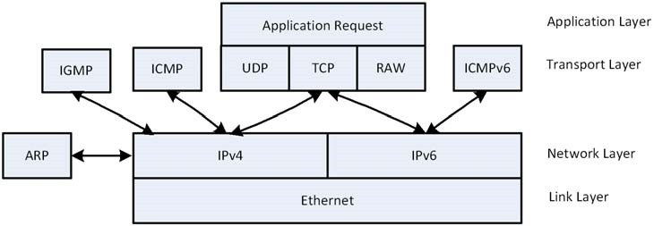
FIGURE 1. Protocol Layering
Packet Pools
Allocating packets in a fast and deterministic manner is always a challenge in real-time networking applications. With this in mind, NetX Duo provides the ability to create and manage multiple pools of fixed-size network packets.
Because NetX Duo packet pools consist of fixed-size memory blocks, there are never any internal fragmentation problems. Of course, fragmentation causes behavior that is inherently nondeterministic. In addition, the time required to allocate and free a NetX Duo packet amounts to simple linked-list manipulation. Furthermore, packet allocation and deallocation is done at the head of the available list. This provides the fastest possible linked list processing.
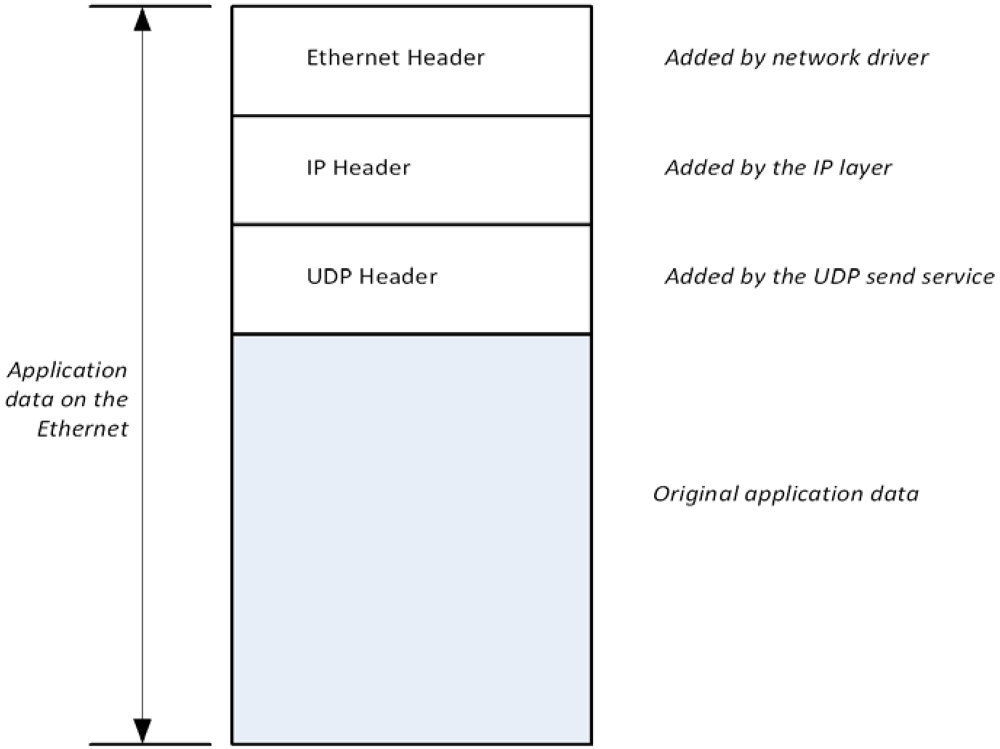
FIGURE 2. UDP Data Encapsulation
Lack of flexibility is typically the main drawback of fixed-size packet pools. Determining the optimal packet payload size that also handles the worst-case incoming packet is a difficult task. NetX Duo packets address this problem with an optional feature called packet chaining. An actual network packet can be made of one or more NetX Duo packets linked together. In addition, the packet header maintains a pointer to the top of the packet. As additional protocols are added, this pointer is simply moved backwards and the new header is written directly in front of the data. Without the flexible packet technology, the stack would have to allocate another buffer and copy the data into a new buffer with the new header, which is processing intensive.
Since each packet payload size is fixed for a given packet pool, application data larger than the payload size would require multiple packets chained together. When filling a packet with user data, the application shall use the service nx_packet_data_append. This service moves application data into a packet. In situations where a packet is not enough to hold user data, additional packets are allocated to store user data. To use packet chaining, the driver must be able to receive into or transmit from chained packets.
For embedded systems that do not need to use the packet chaining feature, the NetX Duo library can be built with NX_DISABLE_PACKET_CHAIN to remove the packet chaining logic. Note that the IP fragmentation and reassembly feature may need to utilize the chained packet feature. Therefore defining NX_DISABLE_PACKET_CHAIN requires NX_DISABLE_FRAGMENTATION also be defined.
Each NetX Duo packet memory pool is a public resource. NetX Duo places no constraints on how packet pools are used.
Packet Pool Memory Area
The memory area for the packet pool is specified during creation. Like other memory areas for ThreadX and NetX Duo objects, it can be located anywhere in the target’s address space.
This is an important feature because of the considerable flexibility it gives the application. For example, suppose that a communication product has a high-speed memory area for network buffers. This memory area is easily utilized by making it into a NetX Duo packet memory pool.
Creating Packet Pools
Packet pools are created either during initialization or during runtime by application threads. There are no limits on the number of packet memory pools in a NetX Duo application.
Dual Packet Pool
Typically the payload size of the default IP packet pool is large enough to accommodate frame size up to the network interface MTU. During normal operation, the IP thread needs to send messages such as ARP, TCP control messages, IGMP messages, ICMPv6 messages. These messages use the packets allocated from the default packet pool in the IP instance. On a memory-constrained system where the amount of memory available for packet pool is limited, using a single packet pool (with the large payload size to match MTU size) may not be an optimal solution. NetX Duo allows application to install an auxiliary packet pool, where the payload size is smaller. Once the auxiliary packet pool is installed, the IP helper thread would allocate packets from either the default packet pool or the auxiliary pool, depending on the size of the message it transmits. For an auxiliary packet pool, a payload size of 200 bytes would work with most of the messages the IP helper thread transmits.
By default NetX Duo library is built without enabling dual packet pool. To enable the feature, build the library with NX_DUAL_PACKET_POOL_ENABLE defined. Then the auxiliary packet pool can be set by calling nx_ip_auxiliary_packet_pool_set.
There is also the option of creating more than one packet pool. For example a transmit packet pool is created with optimal payload size for expected message sizes. A receive packet pool is created in the driver with a payload size set to the driver MTU, since one cannot predict the size of received packets.
Packet Header NX_PACKET
By default, NetX Duo places the packet header immediately before the packet payload area. The packet memory pool is basically a series of packets-- headers followed immediately by the packet payload. The packet header (NX_PACKET) and the layout of the packet pool are pictured in Figure 3.
For network devices driver that are able to perform zero copy operations, typically the starting address of the packet payload area is programmed into the DMA logic. Certain DMA engines have alignment requirement on the payload area. To make the starting address of the payload area align properly for the DMA engine, or the cache operation, the user can define the symbol NX_PACKET_ALIGNMENT.
| It is important for the network driver to use the nx_packet_transmit_release function when transmission of a packet is complete. This function checks to make sure the packet is not part of a TCP output queue before it is actually placed back in the available pool. |
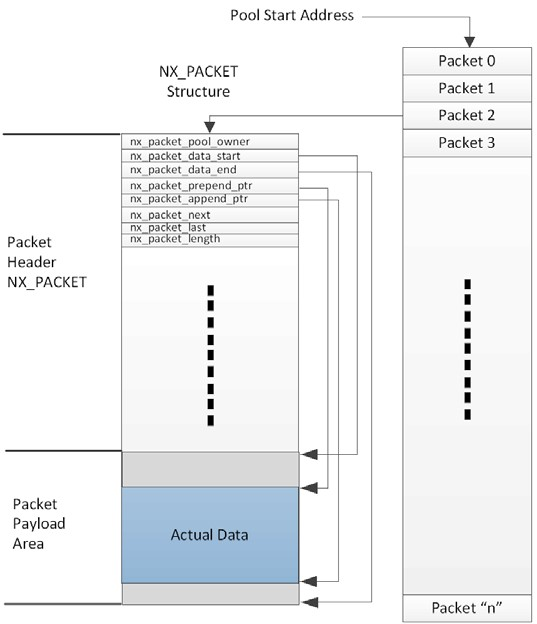
FIGURE 3. Packet Header and Packet Pool Layout
The fields of the packet header are defined as follows. Note that this table is not a comprehensive list of all the members in the NX_PACKET structure.
| Packet header | Purpose |
|---|---|
nx_packet_pool_owner |
This field points to the packet pool that owns this particular packet. When the packet is released, it is released to this particular pool. With the pool ownership inside each packet, it is possible for a datagram to span multiple packets from multiple packet pools. |
nx_packet_next |
This field points to the next packet within the same frame. If NULL, there are no additional packets that are part of the frame. This field is also used to hold fragmented packets until the entire packet can be re-assembled. it is removed if NX_DISABLE_PACKET_CHAINis defined. |
nx_packet_last |
This field points to the last packet within the same network packet. If NULL, this packet represents the entire network packet. This field is removed if NX_DISABLE_PACKET_CHAINis defined. |
nx_packet_length |
This field contains the total number of bytes in the entire network packet, including the total of all bytes in all packets chained together by the nx_packet_nextmember. |
nx_packet_ip_interface |
This field is the interface control block which is assigned to the packet when it is received by the interface driver, and by NetX Duo for outgoing packets. An interface control block describes the interface e.g. network address, MAC address, IP address and interface status such as link enabled and physical mapping required. |
nx_packet_data_start |
This field points to the start of the physical payload area of this packet. It does not have to be immediately following the NX_PACKET header, but that is the default for the nx_packet_pool_create service. |
nx_packet_data_end |
This field points to the end of the physical payload area of this packet. The difference between this field and the nx_packet_data_start field represents the payload size. |
nx_packet_prepend_ptr |
This field points to the location of where packet data, either protocol header or actual data, is added in front of the existing packet data (if any) in the packet payload area. It must be greater than or equal to the nx_packet_data_start pointer location and less than or equal to the nx_packet_append_ptr pointer. |
nx_packet_append_ptr |
This field points to the end of the data currently in the packet payload area. It must be in between the memory location pointed to by nx_packet_prepend_ptr and nx_packet_data_end. The difference between this field and the nx_packet_prepend_ptr field represents the amount of data in this packet. |
nx_packet_packet_pad |
This fields defines the length of padding in 4-byte words to achieve the desired alignment requirement. This field is removed if NX_PACKET_HEADER_PAD is not defined. Alternatively NX_PACKET_ALIGNMENT can be used instead of defining nx_packet_header_pad. |
Packet Header Offsets
Packet header size is defined to allow enough room to accommodate the size of the header. The nx_packet_allocate service is used to allocate a packet and adjusts the prepend pointer in the packet according to the type of packet specified. The packet type tells NetX Duo the offset required for inserting the protocol header (such as UDP, TCP, or ICMP) in front of the protocol data.
The following types are defined in NetX Duo to take into account the IP header and physical layer (Ethernet) header in the packet. In the latter case, it is assumed to be 16 bytes taking the required 4-byte alignment into consideration. IPv4 packets are still defined in NetX Duo for applications to allocate packets for IPv4 networks. Note that if the NetX Duo library is built with IPv6 enabled, the generic packet types (such as NX_IP_PACKET) are mapped to the IPv6 version. If the NetX Duo Library is built without IPv6 enabled, these generic packet types are mapped to the IPv4 version.
The following table shows symbols defined with IPv6 enabled:
| Packet Type | Value |
|---|---|
NX_IPv6_PACKET (NX_IP_PACKET) |
0x38 |
NX_UDPv6_PACKET (NX_UDP_PACKET) |
0x40 |
NX_TCPv6_PACKET (NX_TCP_PACKET) |
0x4c |
NX_IPv4_PACKET |
0x24 |
NX_IPv4_UDP_PACKET |
0x2c |
NX_IPv4_TCP_PACKET |
0x38 |
The following table shows symbols defined with IPv6 disabled:
| Packet Type | Value |
|---|---|
NX_IPv4_PACKET (NX_IP_PACKET) |
0x24 |
NX_IPv4_UDP_PACKET (NX_UDP_PACKET) |
0x2c |
NX_IPv4_TCP_PACKET (NX_TCP_PACKET) |
0x38 |
Note that these values will change if NX_IPSEC_ENABLE is defined. For application using IPsec, refer to NetX Duo IPsec User Guide for more information.
Pool Capacity
The number of packets in a packet pool is a function of the payload size and the total number of bytes in the memory area supplied to the packet pool create service. The capacity of the pool is calculated by dividing the packet size (including the size of the NX_PACKET header, the payload size, and proper alignment) into the total number of bytes in the supplied memory area.
Payload Area Alignment
Packet pool design in NetX Duo supports zero-copy. At the device driver level, the driver is able to assign the payload area directly into buffer descriptors for data reception. Sometimes the DMA engine or the cache synchronization mechanism requires the starting address of the payload area to have a certain alignment requirement. This can be achieved by defining the desired alignment requirement (in bytes) in NX_PACKET_ALIGNMENT. When creating a packet pool, the starting address of the payload area will aligned to this value. By default, starting address is 4-byte aligned.
Thread Suspension
Application threads can suspend while waiting for a packet from an empty pool. When a packet is returned to the pool, the suspended thread is given this packet and resumed.
If multiple threads are suspended on the same packet pool, they resumed in the order they were suspended (FIFO).
Pool Statistics and Errors
If enabled, the NetX Duo packet management software keeps track of several statistics and errors that may be useful to the application. The following statistics and error reports are maintained for packet pools:
-
Total Packets in Pool
-
Free Packets in Pool
-
Total Packet Allocations
-
Pool Empty Allocation Requests
-
Pool Empty Allocation Suspensions
-
Invalid Packet Releases
All of these statistics and error reports, except for total and free packet count in pool, are built into NetX Duo library unless NX_DISABLE_PACKET_INFO is defined. This data is available to the application with the nx_packet_pool_info_get service.
Packet Pool Control Block NX_PACKET_POOL
The characteristics of each packet memory pool are found in its control block. It contains useful information such as the linked list of free packets, the number of free packets, and the payload size for packets in this pool. This structure is defined in the nx_api.h file.
Packet pool control blocks can be located anywhere in memory, but it is most common to make the control block a global structure by defining it outside the scope of any function.
IPv4 Protocol
The Internet Protocol (IP) component of NetX Duo is responsible for sending and receiving IPv4 packets on the Internet. In NetX Duo, it is the component ultimately responsible for sending and receiving TCP, UDP, ICMP, and IGMP messages, utilizing the underlying network driver.
NetX Duo supports both IPv4 protocol (RFC 791) and IPv6 protocol (RFC 2460). This section discusses IPv4. IPv6 is discussed in the next section.
IPv4 Addresses
Each host on the Internet has a unique 32-bit identifier called an IP address. There are five classes of IPv4 addresses as described in Figure 4. The ranges of the five IPv4 address classes are as follows:
| Class | Range |
|---|---|
A |
0.0.0.0 to 127.255.255.255 |
B |
128.0.0.0 to 191.255.255.255 |
C |
192.0.0.0 to 223.255.255.255 |
D |
224.0.0.0 to 239.255.255.255 |
E |
240.0.0.0 to 247.255.255.255 |
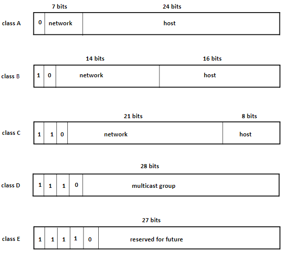
FIGURE 4. IPv4 Address Structure
There are also three types of address specifications: unicast, broadcast, and multicast. Unicast addresses are those IPv4 addresses that identify a specific host on the Internet. Unicast addresses can be either a source or a destination IPv4 address. A broadcast address identifies all hosts on a specific network or sub-network and can only be used as destination addresses. Broadcast addresses are specified by having the host ID portion of the address set to ones. Multicast addresses (Class D) specify a dynamic group of hosts on the Internet. Members of the multicast group may join and leave whenever they wish.
| Only connectionless protocols like UDP over IPv4 can utilize broadcast and the limited broadcast capability of the multicast group. |
| The macro IP_ADDRESS is defined in *nx_api.h. It allows easy specification of IPv4 addresses using commas instead of a periods. For example, IP_ADDRESS(128,0,0,0) specifies the first class B address shown in Figure 4.* |
IPv4 Gateway Address
Network gateways assist hosts on their networks to relay packets destined to destinations outside the local domain. Each node has some knowledge of which next hop to send to, either the destination one of its neighbors, or through a pre-programmed static routing table. However if these approaches fail, the node should forward the packet to its default gateway which has better knowledge on how to route the packet to its destination. Note that the default gateway must be directly accessible through one of the physical interfaces attached to the IP instance. The application calls nx_ip_gateway_address_set to configure IPv4 default gateway address. Use the service nx_ip_gateway_address_get to retrieve the current IPv4 gateway settings. Application shall use the service nx_ip_gateway_address_clear to clear the gateway setting.
IPv4 Header
For any IPv4 packet to be sent on the Internet, it must have an IPv4 header. When higher-level protocols (UDP, TCP, ICMP, or IGMP) call the IP component to send a packet, the IPv4 transmit module places an IPv4 header in front of the data. Conversely, when IP packets are received from the network, the IP component removes the IPv4 header from the packet before delivery to the higher-level protocols. Figure 5 shows the format of the IP header.
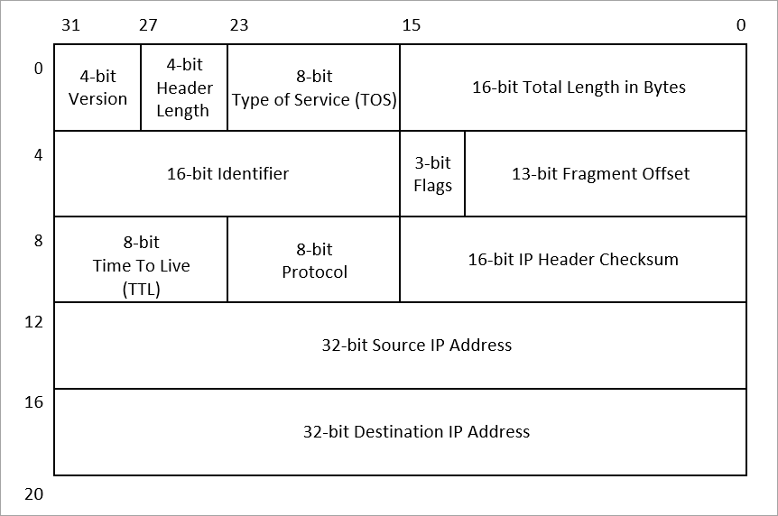
FIGURE 5. IPv4 Header Format
| All headers in the TCP/IP implementation are expected to be in big endian format. In this format, the most significant byte of the word resides at the lowest byte address. For example, the 4-bit version and the 4-bit header length of the IP header must be located on the first byte of the header. |
The fields of the IPv4 header are defined as follows:
| IPv4 Header Field | Purpose |
|---|---|
4-bit version |
This field contains the version of IP this header represents. For IP version 4, which is what NetX Duo supports, the value of this field is 4. |
4-bit header length |
This field specifies the number of 32-bit words in the IP header. If no option words are present, the value for this field is 5. |
8-bit type of service (TOS) |
This field specifies the type of service requested for this IP packet. Valid requests are as follows: |
16-bit total length |
This field contains the total length of the IP datagram in bytes, including the IP header. An IP datagram is the basic unit of information found on a TCP/IP Internet. It contains a destination and source address in addition to data. Because it is a 16-bit field, the maximum size of an IP datagram is 65,535 bytes. |
16-bit identification |
The field is a number used to uniquely identify each IP datagram sent from a host. This number is typically incremented after an IP datagram is sent. It is especially useful in assembling received IP packet fragments. |
3-bit flags |
This field contains IP fragmentation information. Bit 14 is the "don’t fragment" bit. If this bit is set, the outgoing IP datagram will not be fragmented. Bit 13 is the "more fragments" bit. If this bit is set, there are more fragments. If this bit is clear, this is the last fragment of the IP packet. |
13-bit fragment offset |
This field contains the upper 13-bits of the fragment offset. Because of this, fragment offsets are only allowed on 8-byte boundaries. The first fragment of a fragmented IP datagram will have the "more fragments" bit set and have an offset of 0. |
8-bit time to live (TTL) |
This field contains the number of routers this datagram can pass, which basically limits the lifetime of the datagram. |
8-bit protocol |
This field specifies which protocol is using the IP datagram. The following is a list of valid protocols and their values: |
16-bit checksum |
This field contains the 16-bit checksum that covers the IP header only. There are additional checksums in the higher level protocols that cover the IP payload. |
32-bit source IP address |
This field contains the IP address of the sender and is always a host address. |
32-bit destination IP address |
This field contains the IP address of the receiver or receivers if the address is a broadcast or multicast address. |
Creating IP Instances
IP instances are created either during initialization or during runtime by application threads. The initial IPv4 address, network mask, default packet pool, media driver, and memory and priority of the internal IP thread are defined by the nx_ip_createservice even if the application intends to use IPv6 networks only. If the application initializes the IP instance with its IPv4 address set to an invalid address(0.0.0.0), it is assumed that the interface address is going to resolved by manual configuration later, via RARP, or through DHCP or similar protocols.
For systems with multiple network interfaces, the primary interface is designated when calling nx_ip_create. Each additional interface can be attached to the same IP instance by calling nx_ip_interface_attach. This service stores information about the network interface (such as IP address, network mask) in the interface control block, and associates the driver instance with the interface control block in the IP instance. As the driver receives a data packet, it needs to store the interface information in the NX_PACKET structure before forwarding it to the IP receive logic. Note an IP instance must already be created before attaching any interfaces.
IPv6 services are not started after calling nx_ip_create. Applications wishing to use IPv6 services must call the service nx_ipv6_enable to start IPv6.
On the IPv6 network, each interface in an IP instance may have multiple IPv6 global addresses. In addition to using DHCPv6 for IPv6 address assignment, a device may also use Stateless Address Autoconfiguration. More information is available in the "IP Control Block" and "IPv6 Address Resolution" sections later in this chapter.
IP Send
The IP send processing in NetX Duo is very streamlined. The prepend pointer in the packet is moved backwards to accommodate the IP header. The IP header is completed (with all the options specified by the calling protocol layer), the IP checksum is computed in-line (for IPv4 packets only), and the packet is dispatched to the associated network driver. In addition, outgoing fragmentation is also coordinated from within the IP send processing.
For IPv4, NetX Duo initiates ARP requests if physical mapping is needed for the destination IP address. IPv6 uses Neighbor Discovery for IPv6-address-to-physical-address mapping.
| For IPv4 connectivity, packets that require IP address resolution (i.e., physical mapping) are enqueued on the ARP queue until the number of packets queued exceeds the ARP queue depth (defined by the symbol NX_ARP_MAX_QUEUE_DEPTH). If the queue depth is reached, NetX Duo will remove the oldest packet on the queue and continue waiting for address resolution for the remaining packets enqueued. On the other hand, if an ARP entry is not resolved, the pending packets on the ARP entry are released upon ARP entry timeout. |
For systems with multiple network interfaces, NetX Duo chooses an interface based on the destination IP address. The following procedure applies to the selection process:
-
If the sender specifies an outgoing interface and the interface is valid, use that interface.
-
If a destination address is IPv4 broadcast or multicast, the first enabled physical interface is used.
-
If the destination address is found in the static routing table, the interface associated with the gateway is used.
-
If the destination is on-link, the on-link interface is used.
-
If the destination address is a link-local address (169.254.0.0/16), the first valid interface is used.
-
If the default gateway is configured, use the interface associated with the default gateway to transmit the packet.
-
Finally, if one of the valid interface IP address is link-local address (169.254.0.0/16), this interface is used as source address for the transmission.
-
The output packet is dropped if all above fails.
IP Receive
The IP receive processing is either called from the network driver or the internal IP thread (for processing packets on the deferred received packet queue). The IP receive processing examines the protocol field and attempts to dispatch the packet to the proper protocol component. Before the packet is actually dispatched, the IP header is removed by advancing the prepend pointer past the IP header.
IP receive processing also detects fragmented IP packets and performs the necessary steps to reassemble them if fragmentation is enabled. If fragmentation is needed but not enabled, the packet is dropped.
NetX Duo determines the appropriate network interface based on the interface specified in the packet. If the packet interface is NULL, NetX Duo defaults to the primary interface. This is done to guarantee compatibility with legacy NetX Duo Ethernet drivers.
Raw IP Send
A raw IP packet is an IP frame that contains upper layer protocol payload not directly supported (and processed) by NetX Duo. A raw packet allows developers to define their own IP-based applications. An application may send raw IP packets directly using the nxd_ip_raw_packet_send service if raw IP packet processing has been enabled with the nx_ip_raw_packet_enabled service. When transmitting a unicast packet on an IPv6 network, NetX Duo automatically determines the best source IPv6 address to use to send the packets out on, based on the destination address. If the destination address is a multicast (or broadcast for IPv4) address, however, NetX Duo will default to the first (primary) interface. Therefore, to send such packets out on secondary interfaces, the application must use the nx_ip_raw_packet_source_send service to specify the source address to use for the outgoing packet.
Raw IP Receive
If raw IP packet processing is enabled, the application may receive raw IP packets through the nx_ip_raw_packet_receive service. All incoming packets are processed according to the protocol specified in the IP header. If the protocol specifies UDP, TCP, IGMP or ICMP, NetX Duo will process the packet using the appropriate handler for the packet protocol type. If the protocol is not one of these protocols, and raw IP receive is enabled, the incoming packet will be put into the raw packet queue waiting for the application to receive it via the nx_ip_raw_packet_receive service. In addition, application threads may suspend with an optional timeout while waiting for a raw IP packet. The number of packets that can be queued on the raw packet queue is limited. The maximum value is defined in NX_IP_RAW_MAX_QUEUE_DEPTH, whose default value is 20. An application may change the maximum value by calling the nx_ip_raw_receive_queue_max_set service.
Alternatively, the NetX Duo library may be built with NX_ENABLE_IP_RAW_PACKET_FILTER. In this mode of operation, the application provides a callback function that is invoked every time a packet with an unhandled protocol type is received. The IP receive logic forwards the packet to the user-defined raw packet receive filter routine. The filter routine decides whether or not to keep the raw packet for future process. The return value from the callback routine indicates whether the packet has been processed by the raw packet receive filter. If the packet is processed by the callback function, the packet should be released after the application is done with the packet. Otherwise, NetX Duo is responsible for releasing the packet. Refer to the nx_ip_raw_packet_filter_set for more information on how to use the raw packet filter function.
| The BSD wrapper function for NetX Duo relies on the raw packet filter function to handle BSD raw sockets. Therefore, to support raw socket in the BSD wrapper, the NetX Duo library must be built with *NX_ENABLE_IP_RAW_PACKET_FILTER* defined, and the application should not use the *nx_ip_raw_packet_filter_set to install its own raw packet filter functions.* |
Default Packet Pool
Each IP instance is given a default packet pool during creation. This packet pool is used to allocate packets for ARP, RARP, ICMP, IGMP, various TCP control packets (SYN, ACK, and so on), Neighbor Discovery, Router Discovery, and Duplicate Address Detection. If the default packet pool is empty when NetX Duo needs to allocate a packet, NetX Duo may have to abort the particular operation, and will return an error message if possible.
IP Helper Thread
Each IP instance has a helper thread. This thread is responsible for handling all deferred packet processing and all periodic processing. The IP helper thread is created in nx_ip_create.This is where the thread is given its stack and priority. Note that the first processing in the IP helper thread is to finish the network driver initialization associated with the IP create service. After the network driver initialization is complete, the helper thread starts an endless loop to process packet and periodic requests.
| If unexplained behavior is seen within the IP helper thread, increasing its stack size during the IP create service is the first debugging step. If the stack is too small, the IP helper thread could possibly be overwriting memory, which may cause unusual problems. |
Thread Suspension
Application threads can suspend while attempting to receive raw IP packets. After a raw packet is received, the new packet is given to the first thread suspended and that thread is resumed. NetX Duo services for receiving packets all have an optional suspension timeout. When a packet is received or the timeout expires, the application thread is resumed with the appropriate completion status.
IP Statistics and Errors
If enabled, the NetX Duo keeps track of several statistics and errors that may be useful to the application. The following statistics and error reports are maintained for each IP instance:
-
Total IP Packets Sent
-
Total IP Bytes Sent
-
Total IP Packets Received
-
Total IP Bytes Received
-
Total IP Invalid Packets
-
Total IP Receive Packets Dropped
-
Total IP Receive Checksum Errors
-
Total IP Send Packets Dropped
-
Total IP Fragments Sent
-
Total IP Fragments Received
All of these statistics and error reports are available to the application with the nx_ip_info_getservice.
IP Control Block NX_IP
The characteristics of each IP instance are found in its control block. It contains useful information such as the IP addresses and network masks of each network device, and a table of neighbor IP and physical hardware address mapping. This structure is defined in the nx_api.hfile. If IPv6 is enabled, it also contains an array of IPv6 address, the number of which is specified by the user configurable option NX_MAX_IPV6_ADDRESSES. The default value allows each physical network interface to have three IPv6 addresses.
IP instance control blocks can be located anywhere in memory, but it is most common to make the control block a global structure by defining it outside the scope of any function.
Static IPv4 Routing
The static routing feature allows an application to specify an IPv4 network and next hop address for specific out of network destination IP addresses. If static routing is enabled, NetX Duo searches through the static routing table for an entry matching the destination address of the packet to send. If no match is found, NetX Duo searches through the list of physical interfaces and chooses a source IP address and next hop address based on the destination IP address and the network mask. If the destination does not match any of the IP addresses of the network drivers attached to the IP instance, NetX Duo chooses an interface that is directly connected to the default gateway, and uses the IP address of the interface as source address, and the default gateway as the next hop.
Entries can be added and removed from the static routing table using the nx_ip_static_route_add and nx_ip_static_route_delete services, respectively. To use static routing, the host application must enable this feature by defining NX_ENABLE_IP_STATIC_ROUTING.
| When adding an entry to the static routing table, NetX Duo checks for a matching entry for the specified destination address already in the table. If one exists, it gives preference to the entry with the smaller network (longer prefix) in the network mask. |
IPv4 Forwarding
If the incoming IPv4 packet is not destined for this node and IPv4 forwarding feature is enabled, NetX Duo attempts to forward the packet out via the other interfaces.
IP Fragmentation
The network device may have limits on the size of outgoing packets. This limit is called the maximum transmission unit (MTU). IP MTU is the largest IP frame size a link layer driver is able to transmit without fragmenting the IP packet. During a device driver initialization phase, the driver module must configure its IP MTU size via the service nx_ip_interface_mtu_set.
Although not recommended, the application may generate datagrams larger than the underlying IP MTU supported by the device. Before transmitting such IP datagram, the IP layer must fragment these packets. On receiving fragmented IP frames, the receiving end must store all fragmented IP frames with the same fragmentation ID, and reassemble them in order. If the IP receive logic is unable to collect all the fragments to restore the original IP frame in time, all the fragments are released. It is up to the upper layer protocol to detect such packet loss and recover from it.
The IP fragmentation applies to both IPv4 and IPv6 packets.
In order to support IP fragmentation and reassembly operation, the system designer must enable the IP fragmentation feature in NetX Duo using the nx_ip_fragment_enable service. If this feature is not enabled, incoming fragmented IP packets are discarded, as well as packets that exceed the network driver’s MTU.
| The IP Fragmentation logic can be removed completely by defining *NX_DISABLE_FRAGMENTATION* when building the NetX Duo library. Doing so helps reduce the code size of NetX Duo. Note that in this situation, both the IPv4 and IPv6 fragmentation/reassembly functions are disabled. |
| If NX_DISABLE_CHAINED_PACKET is defined, IP fragmentation must be disabled. |
| In an IPv6 network, routers do not fragment a datagram if the size of the datagram exceeds its minimum MTU size. Therefore, it is up to the sending device to determine the minimum MTU between the source and the destination, and to ensure the IP datagram size does not exceed the path MTU. In NetX Duo, IPv6 PATH MTU discovery can be enabled by building NetX Duo library with the symbol NX_ENABLE_IPV6_PATH_MTU_DISCOVERY defined. |
Address Resolution Protocol (ARP) in IPv4
The Address Resolution Protocol (ARP) is responsible for dynamically mapping 32-bit IPv4 addresses to those of the underlying physical media (RFC 826). Ethernet is the most typical physical media, and it supports 48-bit addresses. The need for ARP is determined by the network driver supplied to the nx_ip_create service. If physical mapping is required, the network driver must use the nx_interface_address_mapping_needed service to configure the driver interface properly.
ARP Enable
For ARP to function properly, it must first be enabled by the application with the nx_arp_enable service. This service sets up various data structures for ARP processing, including the creation of an ARP cache area from the memory supplied to the ARP enable service.
ARP Cache
The ARP cache can be viewed as an array of internal ARP mapping data structures. Each internal structure is capable of maintaining the relationship between an IP address and a physical hardware address. In addition, each data structure has link pointers so it can be part of multiple linked lists.
Application can look up an IP address from the ARP cache by supplying hardware MAC address using the service nx_arp_ip_address_find if the mapping exists in the ARP table. Similarly, the service nx_arp_hardware_address_find returns the MAC address for a given IP address.
ARP Dynamic Entries
By default, the ARP enable service places all entries in the ARP cache on the list of available dynamic ARP entries. A dynamic ARP entry is allocated from this list by NetX Duo when a send request to an unmapped IP address is detected. After allocation, the ARP entry is set up and an ARP request is sent to the physical media.
A dynamic entry can also be created by the service nx_arp_dynamic_entry_set.
| If all dynamic ARP entries are in use, the least recently used ARP entry is replaced with a new mapping. |
ARP Static Entries
The application can also set up static ARP mapping by using the nx_arp_static_entry_createservice. This service allocates an ARP entry from the dynamic ARP entry list and places it on the static list with the mapping information supplied by the application. Static ARP entries are not subject to reuse or aging. The application can delete a static entry by using the service nx_arp_static_entry_delete. To remove all static entries in the ARP table, the application may use the service nx_arp_static_entries_delete.
Automatic ARP Entry
NetX Duo records the peer’s IP/MAC mapping after the peer responses to the ARP request. NetX Duo also implements the automatic ARP entry feature where it records peer IP/MAC address mapping based on unsolicited ARP requests from the network. This feature allows the ARP table to be populated with peer information, reducing the delay needed to go through the ARP request/response cycle. However the downside with enabling automatic ARP is that the ARP table tend to fill up quickly on a busy network with many nodes on the local link, which would eventually lead to ARP entry replacement.
This feature is enabled by default. To disable it, the NetX Duo library must be compiled with the symbol NX_DISABLE_ARP_AUTO_ENTRYdefined.</p>
ARP Messages
As mentioned previously, an ARP request message is sent when the IP task detects that mapping is needed for an IP address. ARP requests are sent periodically (every NX_ARP_UPDATE_RATE seconds) until a corresponding ARP response is received. A total of NX_ARP_MAXIMUM_RETRIES ARP requests are made before the ARP attempt is abandoned. When an ARP response is received, the associated physical address information is stored in the ARP entry that is in the cache.
For multihome systems, NetX Duo determines which interface to send the ARP requests and responses based on destination address specified.
| Outgoing IP packets are queued while NetX Duo waits for the ARP response. The number of outgoing IP packets queued is defined by the constant NX_ARP_MAX_QUEUE_DEPTH. |
NetX Duo also responds to ARP requests from other nodes on the local IPv4 network. When an external ARP request is made that matches the current IP address of the interface that receives the ARP request, NetX Duo builds an ARP response message that contains the current physical address.
The formats of Ethernet ARP requests and responses are shown in Figure 6 and are described below.
| Request/Response Field | Purpose |
|---|---|
Ethernet Destination Address |
This 6-byte field contains the destination address for the ARP response and is a broadcast (all ones) for ARP requests. This field is setup by the network driver. |
Ethernet Source Address |
This 6-byte field contains the address of the sender of the ARP request or response and is set up by the network driver. |
Frame Type |
This 2-byte field contains the type of Ethernet frame present and, for ARP requests and responses, this is equal to 0x0806. This is the last field the network driver is responsible for setting up. |
Hardware Type |
This 2-byte field contains the hardware type, which is 0x0001 for Ethernet. |
Protocol Type |
This 2-byte field contains the protocol type, which is 0x0800 for IP addresses. |
Hardware Size |
This 1-byte field contains the hardware address size, which is 6 for Ethernet addresses. |
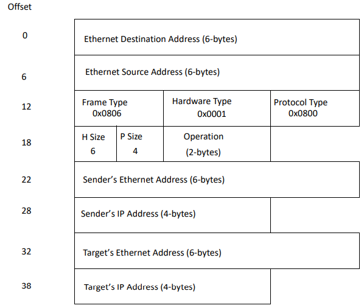
FIGURE 6. ARP Packet Format
| Request/Response Field | Purpose |
|---|---|
Protocol Size |
This 1-byte field contains the IP address size, which is 4 for IP addresses. |
Operation Code |
This 2-byte field contains the operation for this ARP packet. An ARP request is specified with the value of 0x0001, while an ARP response is represented by a value of 0x0002. |
Sender Ethernet Address |
This 6-byte field contains the sender’s Ethernet address. |
Sender IP Address |
This 4-byte field contains the sender’s IP address. |
Target Ethernet Address |
This 6-byte field contains the target’s Ethernet address. |
Target IP Address |
This 4-byte field contains the target’s IP address. |
| ARP requests and responses are Ethernet-level packets. All other TCP/IP packets are encapsulated by an IP packet header. |
| All ARP messages in the TCP/IP implementation are expected to be in big endian format. In this format, the most significant byte of the word resides at the lowest byte address. |
ARP Aging
NetX Duo supports automatic dynamic ARP entry invalidation. NX_ARP_EXPIRATION_RATE specifies the number of seconds an established IP address to physical mapping stays valid. After expiration, the ARP entry is removed from the ARP cache. The next attempt to send to the corresponding IP address will result in a new ARP request. Setting NX_ARP_EXPIRATION_RATE to zero disables ARP aging, which is the default configuration.
ARP Defend
When an ARP request or ARP response packet is received and the sender has the same IP address, which conflicts with the IP address of this node, NetX Duo sends an ARP request for that address as a defense. If the conflict ARP packet is received more than once in 10 seconds, NetX Duo does not send more defend packets. The default interval 10 seconds can be redefined by NX_ARP_DEFEND_INTERVAL. This behavior follows the policy specified in 2.4(c) of RFC5227. Since Windows XP ignores ARP announcement as a response for its ARP probe, user can define NX_ARP_DEFEND_BY_REPLY to send ARP response as additional defense.
ARP Statistics and Errors
If enabled, the NetX Duo ARP software keeps track of several statistics and errors that may be useful to the application. The following statistics and error reports are maintained for each IP’s ARP processing:
-
Total ARP Requests Sent
-
Total ARP Requests Received
-
Total ARP Responses Sent
-
Total ARP Responses Received
-
Total ARP Dynamic Entries
-
Total ARP Static Entries
-
Total ARP Aged Entries
-
Total ARP Invalid Messages
All these statistics and error reports are available to the application with the nx_arp_info_get service.
Reverse Address Resolution Protocol (RARP) in IPv4
The Reverse Address Resolution Protocol (RARP) is the protocol for requesting network assignment of the host’s 32-bit IP addresses (RFC 903). This is done through an RARP request and continues periodically until a network member assigns an IP address to the host network interface in an RARP response. The application creates an IP instance by the service nx_ip_create with a zero IP address. If RARP is enabled by the application, it can use the RARP protocol to request an IP address from the network server accessible through the interface that has a zero IP address.
RARP Enable
To use RARP, the application must create the IP instance with an IP address of zero, then enable RARP using the service nx_rarp_enable. For multihome systems, at least one network device associated with the IP instance must have an IP address of zero. The RARP processing periodically sends RARP request messages for the NetX Duo system requiring an IP address until a valid RARP reply with the network designated IP address is received. At this point, RARP processing is complete.
After RARP has been enabled, it is disabled automatically after all interface addresses are resolved. The application may force RARP to terminate by using the service nx_rarp_disable.
RARP Request
The format of an RARP request packet is almost identical to the ARP packet shown in Figure 6.The only difference is the frame type field is 0x8035 and the Operation Code field is 3, designating an RARP request. As mentioned previously, RARP requests will be sent periodically (every NX_RARP_UPDATE_RATE seconds) until a RARP reply with the network assigned IP address is received.
| All RARP messages in the TCP/IP implementation are expected to be in big endian format. In this format, the most significant byte of the word resides at the lowest byte address. |
RARP Reply
RARP reply messages are received from the network and contain the network assigned IP address for this host. The format of an RARP reply packet is almost identical to the ARP packet shown in Figure 6. The only difference is the frame type field is 0x8035 and the Operation Code field is 4, which designates an RARP reply. After received, the IP address is setup in the IP instance, the periodic RARP request is disabled, and the IP instance is now ready for normal network operation.
For multihome hosts, the IP address is applied to the requesting network interface. If there are other network interfaces still requesting an IP address assignment, the periodic RARP service continues until all interface IP address requests are resolved.
| The application should not use the IP instance until the RARP processing is complete. The nx_ip_status_check may be used by applications to wait for the RARP completion. For multihome systems, the application should not use the requesting interface until the RARP processing is complete on that interface. Status of the IP address on the secondary device can be checked with the nx_ip_interface_status_check service. |
RARP Statistics and Errors
If enabled, the NetX Duo RARP software keeps track of several statistics and errors that may be useful to the application. The following statistics and error reports are maintained for each IP’s RARP processing:
-
Total RARP Requests Sent
-
Total RARP Responses Received
-
Total RARP Invalid Messages
All these statistics and error reports are available to the application with the nx_rarp_info_get service.
Internet Control Message Protocol (ICMP)
Internet Control Message Protocol for IPv4 (ICMP) is limited to passing error and control information between IP network members. Internet Control Message Protocol for IPv6 (ICMPv6) also handles error and control information and is required for address resolution protocols such as Duplicate Address Detection (DAD) and stateless address autoconfiguration.
Like most other application layer (e.g., TCP/IP) messages, ICMP and ICMPv6 messages are encapsulated by an IP header with the ICMP (or ICMPv6) protocol designation.
ICMP Statistics and Errors
If enabled, NetX Duo keeps track of several ICMP statistics and errors that may be useful to the application. The following statistics and error reports are maintained for each IP’s ICMP processing:
-
Total ICMP Pings Sent
-
Total ICMP Ping Timeouts
-
Total ICMP Ping Threads Suspended
-
Total ICMP Ping Responses Received
-
Total ICMP Checksum Errors
-
Total ICMP Unhandled Messages
All these statistics and error reports are available to the application with the nx_icmp_info_get service.
ICMPv4 Services in NetX Duo
ICMPv4 Enable
Before ICMPv4 messages can be processed by NetX Duo, the application must call the nx_icmp_enable service to enable ICMPv4 processing. After this is done, the application can issue ping requests and field incoming ping packets.
ICMPv4 Echo Request
An echo request is one type of ICMPv4 message that is typically used to check for the existence of a specific node on the network, as identified by its host IP address. The popular ping command is implemented using ICMP echo request/echo reply messages. If the specific host is present, its network stack processes the ping request and responses with a ping response. Figure 7 details the ICMPv4 ping message format.
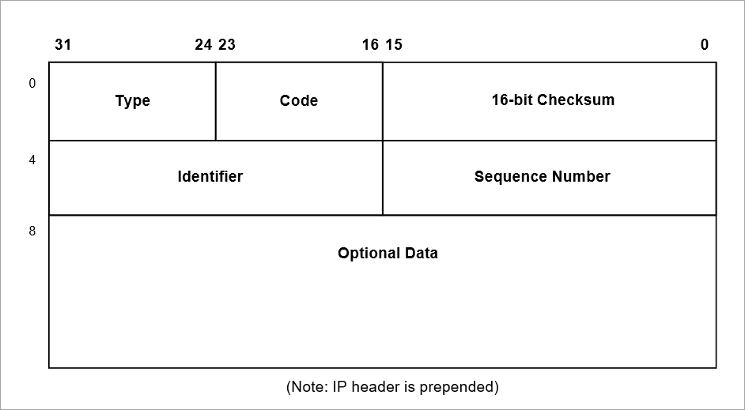
FIGURE 7. ICMPv4 Ping Message
| All ICMPv4 messages in the TCP/IP implementation are expected to be in big endian format. In this format, the most significant byte of the word resides at the lowest byte address. |
The following describes the ICMPv4 header format:
| Header Field | Purpose |
|---|---|
Type |
This field specifies the ICMPv4 message (bits 31-24). The most common are: |
Code |
This field is context specific on the type field (bits 23-16). For an echo request or reply the code is set to zero. |
Checksum |
This field contains the 16-bit checksum of the one’s complement sum of the ICMPv4 message including the entire the ICMPv4 header starting with the Type field. Before generating the checksum, the checksum field is cleared. |
Identification |
This field contains an ID value identifying the host; a host should use the ID extracted from an ECHO request in the ECHO REPLY (bits 31-16). |
Sequence number |
This field contains an ID value; a host should use the ID extracted from an ECHO request in the ECHO REPLY (bits 31-16). Unlike the identifier field, this value will change in a subsequent Echo request from the same host (bits 15-0). |
Internet Group Management Protocol (IGMP)
The Internet Group Management Protocol (IGMP) provides a device to communicate with its neighbors and its routers that it intends to receive, or join, an IPv4 multicast group (RFC 1112 and RFC 2236). A multicast group is basically a dynamic collection of network members and is represented by a Class D IP address. Members of the multicast group may leave at any time, and new members may join at any time. The coordination involved in joining and leaving the group is the responsibility of IGMP.
| IGMP is designed only for IPv4 multicast groups. It cannot be used on the IPv6 network. |
IGMP Enable
Before any multicasting activity can take place in NetX Duo, the application must call the nx_igmp_enable service. This service performs basic IGMP initialization in preparation for multicast requests.
Multicast IPv4 Addressing
As mentioned previously, multicast addresses are actually Class D IP addresses as shown in Figure 4. The lower 28-bits of the Class D address correspond to the multicast group ID. There are a series of pre-defined multicast addresses; however, the all hosts address (244.0.0.1) is particularly important to IGMP processing. The all hosts address is used by routers to query all multicast members to report on which multicast groups they belong to.
Physical Address Mapping in IPv4
Class D multicast addresses map directly to physical Ethernet addresses ranging from 01.00.5e.00.00.00 through 01.00.5e.7f.ff.ff. The lower 23 bits of the IP multicast address map directly to the lower 23 bits of the Ethernet address.
Multicast Group Join
Applications that need to join a particular multicast group may do so by calling the nx_igmp_multicast_join service. This service keeps track of the number of requests to join this multicast group. If this is the first application request to join the multicast group, an IGMP report is sent out on the primary network indicating this host’s intention to join the group. Next, the network driver is called to set up for listening for packets with the Ethernet address for this multicast group.
In a multihome system, if the multicast group is accessible via a specific interface, application shall use the service nx_igmp_multicast_interface_join instead of nx_igmp_multicast_join, which is limited to multicast groups on the primary network.
Multicast Group Leave
Applications that need to leave a previously joined multicast group may do so by calling the nx_igmp_multicast_leave service. This service reduces the internal count associated with how many times the group was joined. If there are no outstanding join requests for a group, the network driver is called to disable listening for packets with this multicast group’s Ethernet address.
Multicast Loopback
An application may wish to receive multicast traffic originated from one of the sources on the same node. This requires the IP multicast component to have loopback enabled by using the service nx_igmp_loopback_enable.
IGMP Report Message
When the application joins a multicast group, an IGMP report message is sent via the network to indicate the host’s intention to join a particular multicast group. The format of the IGMP report message is shown in Figure 8. The multicast group address is used for both the group message in the IGMP report message and the destination IP address.
In the figure above (Figure 8), the IGMP header contains a version/type field, maximum response
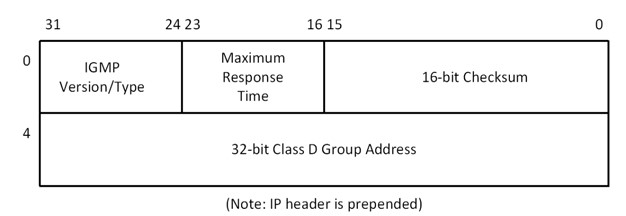
FIGURE 8. IGMP Report Message
time, a checksum field, and a multicast group address field. For IGMPv1 messages, the Maximum Response Time field is always set to zero, as this is not part of the IGMPv1 protocol. The Maximum Response Time field is set when the host receives a Query type IGMP message and cleared when a host receives another host’s Report type message as defined by the IGMPv2 protocol.
The following describes the IGMP header format:
| Header Field | Purpose |
|---|---|
Version |
This field specifies the IGMP version (bits 31- 28). |
Type |
This field specifies the type of IGMP message (bits 27 -24). |
Maximum Response Time |
Not used in IGMP v1. In IGMP v2 this field serves as the maximum response time. |
Checksum |
This field contains the 16-bit checksum of the one’s complement sum of the IGMP message starting with the IGMP version (bits 0-15) |
Group Address |
32-bit class D group IP address |
IGMP report messages are also sent in response to IGMP query messages sent by a multicast router. Multicast routers periodically send query messages out to see which hosts still require group membership. Query messages have the same format as the IGMP Report message shown in Figure 8. The only differences are the IGMP type is equal to 1 and the group address field is set to 0. IGMP Query messages are sent to the all hosts IP address by the multicast router. A host that still wishes to maintain group membership responds by sending another IGMP Report message.
| All messages in the TCP/IP implementation are expected to be in big endian format. In this format, the most significant byte of the word resides at the lowest byte address. |
IGMP Statistics and Errors
If enabled, the NetX Duo IGMP software keeps track of several statistics and errors that may be useful to the application. The following statistics and error reports are maintained for each IP’s IGMP processing:
-
Total IGMP Reports Sent
-
Total IGMP Queries Received
-
Total IGMP Checksum Errors
-
Total IGMP Current Groups Joined
All these statistics and error reports are available to the application with the nx_igmp_info_getservice.
Multicast without IGMP
Application expecting IPv4 multicast traffic can join a multicast group address without invoking IGMP messages by using the service nx_ipv4_multicast_interface_join. This service instructs the IPv4 layer and the underlying interface driver to accept packets from the designated IPv4 multicast address. However there is no IGMP group management messages being sent or processed for this group.
Application no longer wish to receive traffic from the group can use the service nx_ipv4_multicast_interface_leave.
IPv6 in NetX Duo
IPv6 Addresses
IPv6 addresses are 128 bits. The architecture of IPv6 address is described in RFC 4291. The address is divided into a prefix containing the most significant bits and a host address containing the lower bits. The prefix indicates the type of address and is roughly the equivalent of the network address in IPv4 network.
IPv6 has three types of address specifications: unicast, anycast (not supported in NetX Duo), and multicast. Unicast addresses are those IP addresses that identify a specific host on the Internet. Unicast addresses can be either a source or a destination IP address. Multicast addresses specify a dynamic group of hosts on the Internet. Members of the multicast group may join and leave whenever they wish.
IPv6 does not have the equivalent of the IPv4 broadcast mechanism. The ability to send a packet to all hosts can be achieved by sending a packet to the link-local all hosts multicast group.
IPv6 utilizes multicast addresses to perform Neighbor Discovery, Router Discovery, and Stateless Address Auto Configuration procedures.
There are two types of IPv6 unicast addresses: link local addresses, typically constructed by combining the well-known link local prefix with the interface MAC address, and global IP addresses, which also has the prefix portion and the host ID portion. A global address may be configured manually, or through the Stateless Address Autoconfiguration or DHCPv6. NetX Duo supports both link local address and global address.
To accommodate both IPv4 and IPv6 formats, NetX Duo provides a new data type, NXD_ADDRESS, for holding IPv4 and IPv6 addresses. The definition of this structure is shown below. The address field is a union of IPv4 and IPv6 addresses.
typedef struct NXD_ADDRESS_STRUCT
{
ULONG nxd_ip_version;
union
{
ULONG v4;
ULONG v6[4];
} nxd_ip_address;
} NXD_ADDRESS;In the NXD_ADDRESS structure, the first element, nxd_ip_version, indicates IPv4 or IPv6 version. Supported values are either NX_IP_VERSION_V4 or NX_IP_VERSION_V6. nxd_ip_version indicates which field in the nxd_ip_address union to use as the IP address. NetX Duo API services typically take a pointer to NXD_ADDRESS structure as input argument in lieu of the ULONG (32 bit) IP address.
Link Local Addresses
A link-local address is only valid on the local network. A device can send and receive packets to another device on the same network after a valid link local address is assigned to it. An application assigns a link-local address by calling the NetX Duo service nxd_ipv6_address_set, with the prefix length parameter set to 10. The application may supply a link-local address to the service, or it may simply use NX_NULL as the link-local address and allow NetX Duo to construct a link-local address based on the device’s MAC address.
The following example instructs NetX Duo to configure the link-local address with a prefix length of 10 on the primary device (index 0) using its MAC address:
nxd_ipv6_address_set(ip_ptr, 0, NX_NULL, 10, NX_NULL);In the example above, if the MAC address of the interface is 54:32:10:1A:BC:67, the corresponding link-local address would be:
FE80::5632:10FF:FE1A:BC67Note that the host ID portion of the IPv6 address (5632:10FF:FE1A:BC67) is made up of the 6-byte MAC address, with the following modifications:
-
0xFFFE inserted between byte 3 and byte 4 of the MAC address
-
Second lowest bit of the first byte of the MAC address (U/L bit) is set to 1
Refer to RFC 2464 (Transmission of IPv6 Packets over Ethernet Network) for more information on how to construct the host portion of an IPv6 address from its interface MAC address.
There are a few special multicast addresses for sending multicast messages to one or more hosts in IPv6:
| Group | Address | Description |
|---|---|---|
All nodes group |
FF02::1 |
All hosts on the local network |
All routers group |
FF02::2 |
All routers on the local network |
Solicited-node |
FF02::1:FF00:0/104 |
Explained below |
A solicited-node multicast address targets specific hosts on the local link rather than all the IPv6 hosts. It consists of the prefix FF02::1:FF00:0/104, which is 104 bits and the last 24-bits of the target IPv6 address. For example, an IPv6 address 205B:209D:D028::F058:D1C8:1024 has a solicited-node multicast address of address FF02::1:FFC8:1024.
| The double colon notation indicates the intervening bits are all zeroes. FF02::1:FF00:0/104 fully expanded looks like FF02:0000:0000:0000:0000:0001:FF00:0000 |
Global Addresses
An example of an IPv6 global address is 2001:0123:4567:89AB:CDEF::1 NetX Duo stores IPv6 addresses in the NXD_ADDRESS structure. In the example below, the NXD_ADDRESS variable global_ipv6_address contains a unicast IPv6 address. The following example demonstrates a NetX Duo device creating a specific IPv6 global address for its primary device:
NXD_ADDRESS global_ipv6_address;
UINT primary_interface_index = 0;
global_ipv6_address.nxd_ip_version = NX_IP_VERSION_V6;
global_ipv6_address.nxd_ip_address.v6[0] = 0x20010123;
global_ipv6_address.nxd_ip_address.v6[1] = 0x456789AB;
global_ipv6_address.nxd_ip_address.v6[2] = 0xCDEF0000;
global_ipv6_address.nxd_ip_address.v6[3] = 0x00000001;
status = nxd_ipv6_address_set(
&ip_0,
primary_interface_index,
&global_ipv6_address,
64,
NX_NULL);Note that the prefix of this IPv6 address is 2001:0123:4567:89AB, which is 64 bits long and is a common prefix length for global unicast IPv6 addresses on Ethernet.
The NXD_ADDRESS structure also holds IPv4 addresses. An IP address of 192.1.168.10 (0xC001A80A) stored in global_ipv4_address would have the following memory layout:
| Field | Value |
|---|---|
global_ipv4_address.nxd_ip_version |
NX_IP_VERSION_V4 |
global_ipv4_address.nxd_ip_address.v4 |
0xC001A80A |
When an application passes an address to NetX Duo services, the nxd_ip_version field must specify the correct IP version for proper packet handling.
To be backward compatible with existing NetX applications, NetX Duo supports all NetX services. Internally, NetX Duo converts the IPv4 address type ULONG to an NXD_ADDRESS data type before forwarding it to the actual NetX Duo service.
The following example illustrates the similarity and the differences between services in NetX and NetX Duo.
/* Make a connection to the destination IPv4 address
192.1.168.12 through an already created TCP socket bound
to the well known HTTP port number 80. */
global_ipv4_address.nxd_ip_version = NX_IP_VERSION_V4;
global_ipv4_address.nxd_ip_address.v4 = 0xC001A80C;
nxd_tcp_client_socket_connect(&tcp_socket,
&global_ipv4_address,
port_number,
NX_WAIT_FOREVER);The following is the equivalent NetX API:
ULONG server_ip = 0xC001A80C;
NX_TCP_SOCKET tcp_socket;
UINT port_number = 80;
nx_tcp_client_socket_connect(&tcp_socket,
server_ip,
port_number,
NX_WAIT_FOREVER);| Application developers are encouraged to use the nxd version of these APIs. |
IPv6 Default Routers
IPv6 uses a default router to forward packets to offlink destinations. The NetX Duo service nxd_ipv6_default_router_addenables an application to add an IPv6 router to the default router table. See Chapter 4 "Description of Services" for more default router services offered by NetX Duo.
When forwarding IPv6 packets, NetX Duo first checks if the packet destination is on-link. If not, NetX Duo checks the default routing table for a valid router to forward the off-link packet to.
To remove a router from the IPv6 default router table, application shall use the service nxd_ipv6_default_router_delete. To obtain entries of the IPv6 default router table, use the service nxd_ipv6_default_router_entry_get.
IPv6 Header
The IPv6 header has been modified from the IPv4 header. When allocating a packet, the caller specifies the application protocol (e.g., UDP, TCP), buffer size in bytes, and hop limit.
Figure 9 shows the format of the IPv6 header and the table lists the header components.
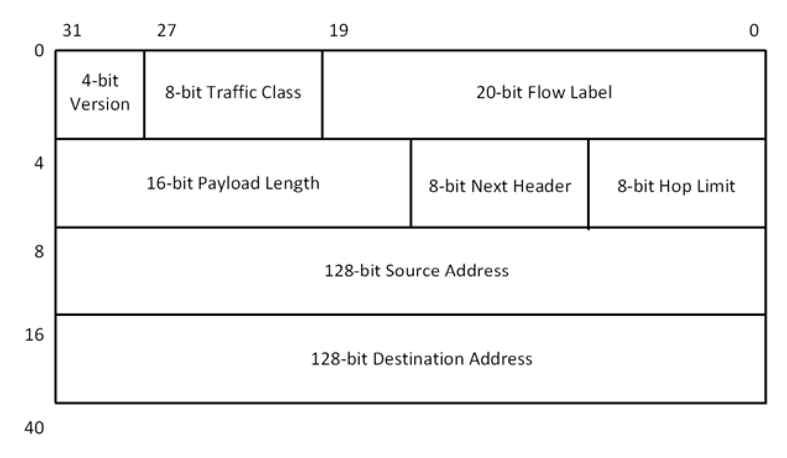
FIGURE 9. IPv6 Header Format
| IP header | Purpose |
|---|---|
Version |
4-bit field for IP version. For IPv6 networks, the value in this field must be 6; For IPv4 networks it must be 4. |
Traffic Class |
8-bit field that stores the traffic class information. This field is not used by NetX Duo. |
Flow Label |
20-bit field to uniquely identify the flow, if any, that a packet is associated with. A value of zero indicates the packet does not belong to a particular flow. This field replaces the TOSfield in IPv4. |
Payload Length |
16-bit field indicating the amount of data in bytes of the IPv6 packet following the IPv6 base header. This includes all encapsulated protocol header and data. |
Next Header |
8-bit field indicating the type of the extension header that follows the IPv6 base header. This field replaces the Protocolfield in IPv4. |
Hop Limit |
8-bit field that limits the number of routers the packet is allowed to go through. This field replaces the TTLfield in IPv4. |
Source Address |
128-bit field that stores the IPv6 address of the sender. |
Destination Address |
128-bit field that sores the IPv6 address of the destination. |
Enabling IPv6 in NetX Duo
By default IPv6 is enabled in NetX Duo. IPv6 services are enabled in NetX Duo if the configurable option NX_DISABLE_IPV6 in nx_user.h is not defined. If NX_DISABLE_IPV6 is defined, NetX Duo will only offer IPv4 services, and all the IPv6-related modules and services are not built into NetX Duo library.
The following service is provided for applications to configure the device IPv6 address: nxd_ipv6_address_set
In addition to manually setting the device’s IPv6 addresses, the system may also use Stateless Address Autoconfiguration. To use this option, the application must call nxd_ipv6_enable to start IPv6 services on the device. In addition, ICMPv6 services must be started by calling nxd_icmp_enable, which enables NetX Duo to perform services such as Router Solicitation, Neighbor Discovery, and Duplicate Address Detection. Note that nx_icmp_enable only starts ICMP for IPv4 services. nxd_icmp_enable starts ICMP services for both IPv4 and IPv6. If the system does not need ICMPv6 services, then nx_icmp_enable can be used so the ICMPv6 module is not linked into the system.
The following example shows a typical NetX Duo IPv6 initialization procedure.
/* Assume ip_0 has been created and IPv4 services (such as ARP,
ICMP, have been enabled. */
#define SECONDARY_INTERFACE 1
/* Enable IPv6 */
status = nxd_ipv6_enable(&ip_0);
if(status != NX_SUCCESS)
{
/* nxd_ipv6_enable failed. */
}
/* Enable ICMPv6 */
status = nxd_icmp_enable(&ip_0);
if(status != NX_SUCCESS)
{
/* nxd_icmp_enable failed. */
}
/* Configure the link local address on the primary interface. */
status = nxd_ipv6_address_set(&ip_0, 0, NX_NULL, 10, NX_NULL);
/* Configure ip_0 primary interface global address. */
ip_address.nxd_ip_version = NX_IP_VERSION_V6
ip_address.nxd_ip_address.v6[0] = 0x20010db8;
ip_address.nxd_ip_address.v6[1] = 0x0000f101;
ip_address.nxd_ip_address.v6[2] = 0;
ip_address.nxd_ip_address.v6[3] = 0x202;
/* Configure global address of the primary interface. */
status = nxd_ipv6_address_set(&ip_0, SECONDARY_INTERFACE,
&ip_address, 64, NX_NULL);Upper layer protocols (such as TCP and UDP) can be enabled either before or after IPv6 starts.
| IPv6 services are available only after IP thread is initialized and the device is enabled. |
After the interface is enabled (i.e.,the interface device driver is ready to send and receive data, and a valid link local address has been obtained), the device may obtain global IPv6 addresses by one of the these methods:
-
Stateless Address Auto Configuration;
-
Manual IPv6 address configuration;
-
Address configuration via DHCPv6 (with optional DHCPv6 package)
The first two methods are described below. The 3rd method (DHCPv6) is described in the DHCP package.
Stateless Address Autoconfiguration Using Router Solicitation
NetX Duo devices can configure their interfaces automatically when connected to an IPv6 network with a router that supplies prefix information. Devices that require Stateless Address Autoconfiguration send out router solicitation (RS) messages. Routers on the network respond with solicited router advertisement (RA) messages. RA messages advertise prefixes that identify the network addresses associated with a link. Devices then generate a unique identifier for the network the device is attached to. The address is formed by combining the prefix and its unique identifier. In this manner on receiving the RA messages, hosts generate their IP address. Routers may also send periodic unsolicited RA messages.
| NetX Duo allows an application to enable or disable Stateless Address Autoconfiguration at run time. To enable this feature, NetX Duo library must be compiled with NX_IPV6_STATELESS_AUTOCONFIG_CONTROL defined. Once this feature is enabled, applications may use nxd_ipv6_stateless_address_autoconfigure_enable and nxd_ipv6_stateless_address_autoconfigure_disable to enable or disable IPv6 stateless address autoconfiguration. |
Manual IPv6 Address Configuration
If a specific IPv6 address is needed, the application may use nxd_ipv6_address_set to manually configure an IPv6 address. A network interface may have multiple IPv6 addresses. However keep in mind that the total number of IPv6 addresses in a system, either obtained through Stateless Address Autoconfiguration, or through the Manual Configuration, cannot exceed NX_MAX_IPV6_ADDRESSES.
The following example illustrates how to manually configure a global address on the primary interface (device 0) in ip_0:
NXD_ADDRESS global_address;
global_address.nxd_ip_version = NX_IP_VERSION_V6;
global_address.nxd_ip_address.v6[0] = 0x20010000;
global_address.nxd_ip_address.v6[1] = 0x00000000;
global_address.nxd_ip_address.v6[2] = 0x00000000;
global_address.nxd_ip_address.v6[3] = 0x0000ABCD;The host then calls the following NetX Duo service to assign this address as its global IP address:
status = nxd_ipv6_address_set(&ip_0, 0,
&global_address, 64
NX_NULL);Duplicate Address Detection (DAD)
After a system configures its IPv6 address, the address is marked as TENTATIVE. If Duplicate Address Detection (DAD), described in RFC 4862, is enabled, NetX Duo automatically sends neighbor solicitation (NS) messages with this tentative address as the destination. If no hosts on the network respond to these NS messages within a given period of time, the address is assumed to be unique on the local link, and its state transits to the VALID state. At this point the application may start using this IP address for communication.
The DAD functionality is part of the ICMPv6 module. Therefore, the application must enable ICMPv6 services before a newly configured address can go through the DAD process. Alternatively, the DAD process may be turned off by defining NX_DISABLE_IPV6_DAD option in the NetX Duo library build environment (defined as nx_user.h). During the DAD process, the NX_IPV6_DAD_TRANSMITS parameter determines the number of NS messages sent by NetX Duo without receiving a response to determine that the address is unique. By default and recommended by RFC 4862, NX_IPV6_DAD_TRANSMITS is set at 3. Setting this symbol to zero effectively disables DAD.
If ICMPv6 or DAD is not enabled at the time the application assigns an IPv6 address, DAD is not performed and NetX Duo sets the state of the IPv6 address to VALID immediately.
NetX Duo cannot communicate on the IPv6 network until its link local and/or global address is valid. After a valid address is obtained, NetX Duo attempts to match the destination address of an incoming packet against one of its configured IPv6 address or an enabled multicast address. If no matches are found, the packet is dropped.
| During the DAD process, the number of DAD NS packets to be transmitted is defined by *NX_IPV6_DAD_TRANSMITS*, which defaults to 3, and by default there is a one second delay between each DAD NS message is sent. Therefore, in a system with DAD enabled, after an IPv6 address is assigned (and assuming this is not a duplicated address), there is approximately 3 seconds delay before the IP address is in a VALID state and is ready for communication. |
Applications may want to receive notifications when IPv6 addresses in the system are changed. To enable the IPv6 address change notification feature, the NetX Duo library must be built with the symbol NX_ENABLE_IPV6_ADDRESS_CHANGE_NOTIFY defined. Once the feature is enabled, applications may install the callback function by using the nxd_ipv6_address_change_notify service.
Once an IPv6 address is changed, or becomes invalid, the user-supplied callback function is invoked with the following information:
| Function | Description |
|---|---|
ip_ptr |
Pointer to the IP instance |
interface_index |
Index to the network interface that this IPv6 address is associated with |
ipv6_addr_index |
Index to the IPv6 address table |
ipv6_address |
Pointer to the IPv6 address, in the form of an array of four ULONG integers. Pv6 addresses are presented in host byte order. |
IPv6 Multicast Support In NetX Duo
Multicast addresses specify a dynamic group of hosts on the Internet. Members of the multicast group may join and leave whenever they wish. NetX Duo implements several ICMPv6 protocols, including Duplicate Address Detection, Neighbor Discovery, and Router Discovery, which require IP multicast capability. Therefore, NetX Duo expects the underlying device driver to support multicast operations.
When NetX Duo needs to join or leave a multicast group (such as the all-node multicast address, and the solicited-node multicast address), it issues a driver command to the device driver to join or leave a multicast MAC address. The driver command for joining the multicast address is NX_LINK_MULTICAST_JOIN. To leave a multicast address, NetX Duo issues the driver command NX_LINK_MULTICAST_LEAVE. The device driver must implement these two commands for ICMPv6 protocols to work properly.
Applications may join an IPv6 multicast group by using the service nxd_ipv6_multicast_interface_join. This service registers the multicast address with the IP stack, and then notifies the specified device driver of the IPv6 multicast address. To leave a multicast group, applications use the service nxd_ipv6_multicast_interface_leave.
Neighbor Discovery (ND)
Neighbor Discovery is a protocol in IPv6 networks for mapping physical addresses to the IPv6 addresses (global address or link-local address). This mapping is maintained in the Neighbor Discovery Cache (ND Cache). The ND process is the equivalent of the ARP process in IPv4, and the ND Cache is similar to the ARP table. An IPv6 node can obtain its neighbor’s MAC address using the Neighbor Discovery (ND) protocol. It sends out a neighbor solicitation (NS) message to the all-node solicited node multicast address, and waits for a corresponding neighbor advertisement (NA) message. The MAC address obtained through this process is stored in the ND Cache.
Each IP instance has one ND cache. The ND Cache is maintained as an array of entries. The size of the array is defined at compilation time by setting the option NX_IPV6_NEIGHBOR_CACHE_SIZE which in nx_user.h. Note that all interfaces attached to an IP instance share the same ND cache.
The entire ND Cache is empty when NetX Duo starts up. As the system runs, NetX Duo automatically updates the ND Cache, adding and deleting entries as per ND protocol. However, an application may also update the ND Cache by manually adding and deleting cache entries using the following NetX Duo services:
-
nxd_nd_cache_entry_delete
-
nxd_nd_cache_entry_set
-
nxd_nd_cache_invalidate
When sending and receiving IPv6 packets, NetX Duo automatically updates the ND Cache table.
Internet Control Message Protocol in IPv6 (ICMPv6)
The role of ICMPv6 in IPv6 has been greatly expanded to support IPv6 address mapping and router discovery. In addition, NetX Duo ICMPv6 supports echo request and response, ICMPv6 error reports, and ICMPv6 redirect messages.
ICMPv6 Enable
Before ICMPv6 messages can be processed by NetX Duo, the application must call the nxd_icmp_enable service to enable ICMPv6 processing as explained previously.
ICMPv6 Messages
The ICMPv6 header structure is similar to the ICMPv4 header structure. As shown below, the basic ICMPv6 header contains the three fields, type, code, and checksum, plus variable length of ICMPv6 option data.
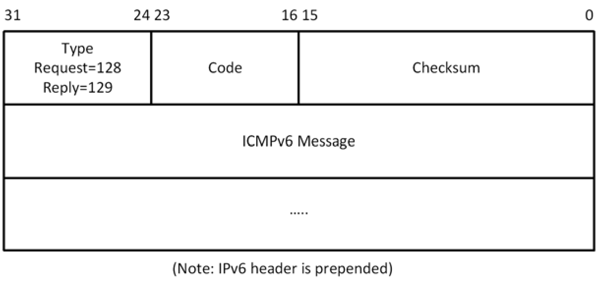
FIGURE 10. Basic ICMPv6 Header
| Field | Size(bytes) | Description |
|---|---|---|
1 |
Identifies the ICMPv6 message type; |
|
1 Destination Unreachable |
||
2 Packet Too Big |
||
3 Time Exceeded |
||
4 Parameter Problem |
||
128 Echo Request |
||
129 Echo Reply |
||
133 Router Solicitation |
||
134 Router Advertisement |
||
135 Neighbor Solicitation |
||
136 Neighbor Advertisement |
||
137 Redirect Message |
||
Code |
1 |
Further qualifies the ICMPv6 message type. Generally used with error messages. If not used, it is set to zero. Echo request/reply and NS messages do not use it. |
Checksum |
2 |
16-bit checksum field for the ICMP Header. This is a 16-bit complement of the entire ICMPv6 message, including the ICMPv6 header. It also includes a pseudo-header of the IPv6 source address, destination address, and packet payload length. |
An example Neighbor Solicitation header is shown below.
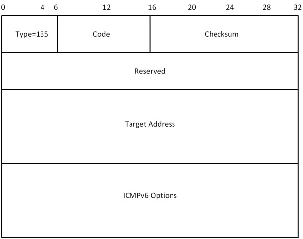
FIGURE 11. ICMPv6 Header for a Neighbor Solicitation Message
| Field | Size(bytes) | Description |
|---|---|---|
Type |
1 |
Identifies the ICMPv6 message type for neighbor solicitation messages. Value is 135. |
Code |
1 |
Not used. Set to 0. |
Checksum |
2 |
16-bit checksum field for the ICMPv6 header. |
Reserved |
4 |
4 reserved bytes set to 0. |
Target Address |
16 |
IPv6 address of target of the solicitation. For IPv6 address resolution, this is the actual unicast IP address of the device whose link layer address needs to be resolved. |
Options |
Variable |
Optional information specified by the Neighbor Discovery Protocol. |
ICMPv6 Ping Request
In NetX Duo applications use nxd_icmp_ping to issue either IPv6 or IPv4 ping requests, based on the destination IP address specified in the parameters.
ICMPv6 Ping Response
An ICMPv6 ping response is another type of ICMPv6 message that is generated internally by the ICMPv6 component in response to an external ICMPv6 ping request. In additional to acknowledgement, the ICMPv6 ping response also contains a copy of the user data supplied in the ICMPv6 ping request.
Thread Suspension
Application threads can suspend while attempting to ping another network member. After a ping response is received, the ping response message is given to the first thread suspended and that thread is resumed. Like all NetX Duo services, suspending on a ping request has an optional timeout.
Other ICMPv6 Messages
ICMPv6 messages are required for the following features:
-
Neighbor Discovery
-
Stateless Address Autoconfiguration
-
Router Discovery
-
Neighbor Unreachability Detection
Neighbor Unreachability, Router and Prefix Discovery
Neighbor Unreachability Detection, Router Discovery, and Prefix Discovery are based on the Neighbor Discovery protocol and are described below.
Neighbor Unreachability Detection: An IPv6 device searches its Neighbor Discovery (ND) Cache for the destination link layer address when it wishes to send a packet. The immediate destination, sometimes referred to as the 'next hop,' may be the actual destination on the same link or it may be a router if the destination is off link. An ND cache entry contains the status on a neighbor’s reachability.
A REACHABLE status indicates the neighbor is considered reachable. A neighbor is reachable if it has recently received confirmation that packets sent to the neighbor have been received. Confirmation in NetX Duo take the form of receiving an NA message from the neighbor in response to an NS message sent by the NetX Duo device. NetX Duo will also change the state of the neighbor status to REACHABLE if the application calls the NetX Duo service nxd_nd_cache_entry_set to manually enter a cache record.
Router Discovery: An IPv6 device uses a router to forward all packets intended for off link destinations. It may also use information sent by the router, such as router advertisement (RA) messages, to configure its global IPv6 addresses.
A device on the network may initiate the Router Discovery process by sending a router solicitation (RS) message to the all-router multicast address (FF01::2). Or it can wait on the all-node multicast address (FF::1) for a periodic RA from the routers.
An RA message contains the prefix information for configuring an IPv6 address for that network. In NetX Duo, router solicitation is by default enabled and can be disabled by setting the configuration option NX_DISABLE_ICMPV6_ROUTER_SOLICITATION in nx_user.h. See Configuration Options in the "Installation and Use of NetX Duo" chapter for more details on setting Router Solicitation parameters.
Prefix Discovery: An IPv6 device uses prefix discovery to learn which target hosts are accessible directly without going through a router. This information is made available to the IPv6 device from RA messages from the router. The IPv6 device stores the prefix information in a prefix table. Prefix discovery is matching a prefix from the IPv6 device prefix table to a target address. A prefix matches a target address if all the bits in the prefix match the most significant bits of the target address. If more than one prefix covers an address, the longest prefix is selected.
User Datagram Protocol (UDP)
The User Datagram Protocol (UDP) provides the simplest form of data transfer between network members (RFC 768). UDP data packets are sent from one network member to another in a best effort fashion; i.e., there is no built-in mechanism for acknowledgement by the packet recipient. In addition, sending a UDP packet does not require any connection to be established in advance. Because of this, UDP packet transmission is very efficient.
For developers migrating their NetX applications to NetX Duo there are only a few basic changes in UDP functionality between NetX and NetX Duo. This is because IPv6 is primarily concerned with the underlying IP layer. All NetX Duo UDP services can be used for either IPv4 or IPv6 connectivity.
UDP Header
UDP places a simple packet header in front of the application’s data on transmission, and removes a similar UDP header from the packet on reception before delivering a received UDP packet to the application. UDP utilizes the IP protocol for sending and receiving packets, which means there is an IP header in front of the UDP header when the packet is on the network. Figure 12 shows the format of the UDP header.
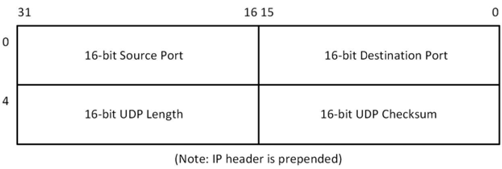
FIGURE 12. UDP Header
| All headers in the UDP/IP implementation are expected to be in big endian format. In this format, the most significant byte of the word resides at the lowest byte address. |
The following describes the UDP header format:
| Header Field | Purpose |
|---|---|
16-bit source port number |
This field contains the port on which the UDP packet is being sent from. Valid UDP ports range from 1 through 0xFFFF. |
16-bit destination port number |
This field contains the UDP port to which the packet is being sent to. Valid UDP ports range from 1 through 0xFFFF. |
16-bit UDP length |
This field contains the number of bytes in the UDP packet, including the size of the UDP header. |
16-bit UDP checksum |
This field contains the 16-bit checksum for the packet, including the UDP header, the packet data area, and the pseudo IP header. |
UDP Enable
Before UDP packet transmission is possible, the application must first enable UDP by calling the nx_udp_enable service. After enabled, the application is free to send and receive UDP packets.
UDP Socket Create
UDP sockets are created either during initialization or during runtime by application threads. The initial type of service, time to live, and receive queue depth are defined by the nx_udp_socket_create service. There are no limits on the number of UDP sockets in an application.
UDP Checksum
IPv6 protocol requires a UDP header checksum computation on packet data, whereas in the IPv4 protocol it is optional.
UDP specifies a one’s complement 16-bit checksum that covers the IP pseudo header (consisting of the source IP address, destination IP address, and the protocol/length IP word), the UDP header, and the UDP packet data. The only differences between IPv4 and IPv6 UDP packet header checksums is that the source and destination IP addresses are 32 bit in IPv4 while in IPv6 they are 128 bit. If the calculated UDP checksum is 0, it is stored as all ones (0xFFFF). If the sending socket has the UDP checksum logic disabled, a zero is placed in the UDP checksum field to indicate the checksum was not calculated.
If the UDP checksum does not match the computed checksum by the receiver, the UDP packet is simply discarded.
On the IPv4 network, UDP checksum is optional. NetX Duo allows an application to enable or disable UDP checksum calculation on a per-socket basis. By default, the UDP socket checksum logic is enabled. The application can disable checksum logic for a particular UDP socket by calling the nx_udp_socket_checksum_disable service. On the IPv6 network, however, UDP checksum is mandatory. Therefore, the service nx_udp_socket_checksum_disable would not disable UDP checksum logic when sending a packet through the IPv6 network.
Certain Ethernet controllers are able to generate the UDP checksum on the fly. If the system is able to use hardware checksum computation feature, the NetX Duo library can be built without the checksum logic. To disable UDP software checksum, the NetX Duo library must be built with the following symbols defined: NX_DISABLE_UDP_TX_CHECKSUM and NX_DISABLE_UDP_RX_CHECKSUM (described in Chapter two). The configuration options remove UDP checksum logic from NetX Duo entirely, while calling the nx_udp_socket_checksum_disable service allows the application to disable IPv4 UDP checksum processing on a per socket basis.
UDP Ports and Binding
A UDP port is a logical end point in the UDP protocol. There are 65,535 valid ports in the UDP component of NetX Duo, ranging from 1 through 0xFFFF. To send or receive UDP data, the application must first create a UDP socket, then bind it to a desired port. After binding a UDP socket to a port, the application may send and receive data on that socket.
UDP Fast Path
The UDP Fast Path is the name for a low packet overhead path through the NetX Duo UDP implementation. Sending a UDP packet requires just a few function calls: nx_udp_socket_send, nx_ip_packet_send, and the eventual call to the network driver. nx_udp_socket_send is available in NetX Duo for existing NetX applications and is only applicable for IPv4 packets. The preferred method, however, is to use nxd_udp_socket_send service discussed below. On UDP packet reception, the UDP packet is either placed on the appropriate UDP socket receive queue or delivered to a suspended application thread in a single function call from the network driver’s receive interrupt processing. This highly optimized logic for sending and receiving UDP packets is the essence of UDP Fast Path technology.
UDP Packet Send
Sending UDP data over IPv6 or IPv4 networks is easily accomplished by calling the nxd_udp_socket_send function. The caller must set the IP version in the nx_ip_version field of the NXD_ADDRESS pointer parameter. NetX Duo will determine the best source address for transmitted UDP packets based on the destination IPv4/IPv6 address. This service places a UDP header in front of the packet data and sends it out onto the network using an internal IP send routine. There is no thread suspension on sending UDP packets because all UDP packet transmissions are processed immediately.
For multicast or broadcast destinations, the application should specify the source IP address to use if the NetX Duo device has multiple IP addresses to choose from. This can be done with the services nxd_udp_socket_source_send.
| If nx_udp_socket_send is used for transmitting multicast or broadcast packets, the IP address of the first enabled interface is used as source address. |
| If UDP checksum logic is enabled for this socket, the checksum operation is performed in the context of the calling thread, without blocking access to the UDP or IP data structures. |
| The UDP payload data residing in the NX_PACKET structure should reside on a long-word boundary. The application needs to leave sufficient space between the prepend pointer and the data start pointer for NetX Duo to place the UDP, IP, and physical media headers. |
UDP Packet Receive
Application threads may receive UDP packets from a particular socket by calling nx_udp_socket_receive. The socket receive function delivers the oldest packet on the socket’s receive queue. If there are no packets on the receive queue, the calling thread can suspend (with an optional timeout) until a packet arrives.
The UDP receive packet processing (usually called from the network driver’s receive interrupt handler) is responsible for either placing the packet on the UDP socket’s receive queue or delivering it to the first suspended thread waiting for a packet. If the packet is queued, the receive processing also checks the maximum receive queue depth associated with the socket. If this newly queued packet exceeds the queue depth, the oldest packet in the queue is discarded.
UDP Receive Notify
If the application thread needs to process received data from more than one socket, the nx_udp_socket_receive_notify function should be used. This function registers a receive packet callback function for the socket. Whenever a packet is received on the socket, the callback function is executed.
The contents of the callback function is application specific; however, it would most likely contain logic to inform the processing thread that a packet is now available on the corresponding socket.
Peer Address and Port
On receiving a UDP packet, application may find the sender’s IP address and port number by using the service nx_udp_packet_info_extract. On successful return, this service provides information on the sender’s IP address, sender’s port number, and the local interface through which the packet was received.
Thread Suspension
As mentioned previously, application threads can suspend while attempting to receive a UDP packet on a particular UDP port. After a packet is received on that port, it is given to the first thread suspended and that thread is then resumed. An optional timeout is available when suspending on a UDP receive packet, a feature available for most NetX Duo services.
UDP Socket Statistics and Errors
If enabled, the NetX Duo UDP socket software keeps track of several statistics and errors that may be useful to the application. The following statistics and error reports are maintained for each IP/UDP instance:
-
Total UDP Packets Sent
-
Total UDP Bytes Sent
-
Total UDP Packets Received
-
Total UDP Bytes Received
-
Total UDP Invalid Packets
-
Total UDP Receive Packets Dropped
-
Total UDP Receive Checksum Errors
-
UDP Socket Packets Sent
-
UDP Socket Bytes Sent
-
UDP Socket Packets Received
-
UDP Socket Bytes Received
-
UDP Socket Packets Queued
-
UDP Socket Receive Packets Dropped
-
UDP Socket Checksum Errors
All these statistics and error reports are available to the application with the nx_udp_info_get service for UDP statistics amassed over all UDP sockets, and the nx_udp_socket_info_get service for UDP statistics on the specified UDP socket.
UDP Socket Control Block NX_UDP_SOCKET
The characteristics of each UDP socket are found in the associated NX_UDP_SOCKET control block. It contains useful information such as the link to the IP data structure, the network interface for the sending and receiving paths, the bound port, and the receive packet queue. This structure is defined in the nx_api.h file.
Transmission Control Protocol (TCP)
The Transmission Control Protocol (TCP) provides reliable stream data transfer between two network members (RFC 793). All data sent from one network member are verified and acknowledged by the receiving member. In addition, the two members must have established a connection prior to any data transfer. All this results in reliable data transfer; however, it does require substantially more overhead than the previously described UDP data transfer.
Except where noted, there are no changes in TCP protocol API services between NetX and NetX Duo because IPv6 is primarily concerned with the underlying IP layer. All NetX Duo TCP services can be used for either IPv4 or IPv6 connections.
TCP Header
On transmission, TCP header is placed in front of the data from the user. On reception, TCP header is removed from the incoming packet, leaving only the user data available to the application. TCP utilizes the IP protocol to send and receive packets, which means there is an IP header in front of the TCP header when the packet is on the network. Figure 13 shows the format of the TCP header.
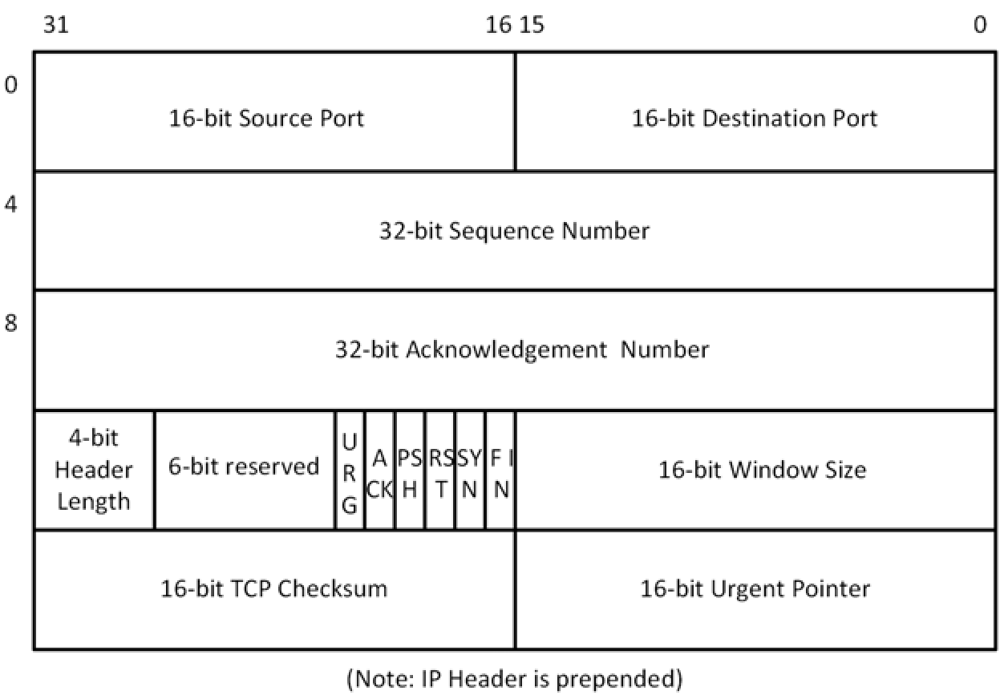
FIGURE 13. TCP Header
The following describes the TCP header format:
| Header Field | Purpose |
|---|---|
16-bit source port number |
This field contains the port the TCP packet is being sent out on. Valid TCP ports range from 1 through 0xFFFF. |
16-bit destination port |
This field contains the TCP port the packet is being sent to. Valid TCP ports range from 1 through 0xFFFF. |
32-bit sequence number |
This field contains the sequence number for data sent from this end of the connection. The original sequence is established during the initial connection sequence between two TCP nodes. Every data transfer from that point results in an increment of the sequence number by the amount bytes sent. |
32-bit acknowledgement number |
This field contains the sequence number corresponding to the last byte received by this side of the connection. This is used to determine whether or not data previously sent has successfully been received by the other end of the connection. |
4-bit header length |
This field contains the number of 32-bit words in the TCP header. If no options are present in the TCP header, this field is 5. |
6-bit code bits |
This field contains the six different code bits used to indicate various control information associated with the connection. The control bits are defined as follows:<br > - URG (21): Urgent data present<br > - ACK (20): Acknowledgement number is valid<br > - PSH (19): Handle this data immediately<br > - RST (18): Reset the connection<br > - SYN (17): Synchronize sequence numbers (used to establish connection)<br > - FIN (16): Sender is finished with transmit (used to close connection) |
16-bit window |
This field is used for flow control. It contains the amount of bytes the socket can currently receive. This basically is used for flow control. The sender is responsible for making sure the data to send will fit into the receiver’s advertised window. |
16-bit TCP checksum |
This field contains the 16-bit checksum for the packet including the TCP header, the packet data area, and the pseudo IP header. |
16-bit urgent pointer |
This field contains the positive offset of the last byte of the urgent data. This field is only valid if the URG code bit is set in the header. |
| All headers in the TCP/IP implementation are expected to be in big endian format. In this format, the most significant byte of the word resides at the lowest byte address. |
TCP Enable
Before TCP connections and packet transmissions are possible, the application must first enable TCP by calling the nx_tcp_enable service. After enabled, the application is free to access all TCP services.
TCP Socket Create
TCP sockets are created either during initialization or during runtime by application threads. The initial type of service, time to live, and window size are defined by the nx_tcp_socket_create service. There are no limits on the number of TCP sockets in an application.
TCP Checksum
TCP specifies a one’s complement 16-bit checksum that covers the IP pseudo header, (consisting of the source IP address, destination IP address, and the protocol/length IP word), the TCP header, and the TCP packet data. The only difference between IPv4 and IPv6 TCP packet header checksums is that the source and destination IP addresses are 32 bit in IPv4 and 128 bit in IPv6.
Certain network controllers are able to perform TCP checksum computation and validation in hardware. For such systems, applications may want to use hardware checksum logic as much as possible to reduce runtime overhead. Applications may disable TCP checksum computation logic from the NetX Duo library altogether at build time by defining NX_DISABLE_TCP_TX_CHECKSUM and NX_DISABLE_TCP_RX_CHECKSUM. This way, the TCP checksum code is not compiled in. However one should exercise caution if the optional NetX Duo IPsec package is installed, and the TCP connection may need to traverse through a secure channel. In this case, data in packets belonging to the TCP connection is already encrypted, and most hardware TCP checksum modules present in the network driver are unable to generate correct checksum value from the encrypted TCP payload.
To address this issue, application shall keep the TCP checksum logic available in the library and use the interface capability feature. With interface capability feature enabled, the TCP module knows how to properly handle the TCP checksum if the driver is also able to compute the checksum value:
1) If the TCP packet is not subject to IPsec process, the network interface hardware is able to compute the checksum. Therefore the TCP module does not attempt to compute the checksum;
2) If IPsec package is installed, and the TCP packet is subject to IPsec process, the TCP module computes checksum in software before sending the packet to IPsec layer.
TCP Port
A TCP port is a logical connection point in the TCP protocol. There are 65,535 valid ports in the TCP component of NetX Duo, ranging from 1 through 0xFFFF. Unlike UDP in which data from one port can be sent to any other destination port, a TCP port is connected to another specific TCP port, and only when this connection is established can any data transfer take place—and only between the two ports making up the connection.
| TCP ports are completely separate from UDP ports; e.g., UDP port number 1 has no relation to TCP port number 1. |
Client-Server Model
To use TCP for data transfer, a connection must first be established between the two TCP sockets. The establishment of the connection is done in a client-server fashion. The client side of the connection is the side that initiates the connection, while the server side simply waits for client connection requests before any processing is done.
| For multihome devices, NetX Duo automatically determines the source address to use for the connection, and the next hop address based on the destination IP address of the connection. Because TCP is limited to sending packets to unicast (e.g.nonbroadcast) destination addresses, NetX Duo does not require a "hint" for choosing the source IPv6 address. |
TCP Socket State Machine
The connection between two TCP sockets (one client and one server) is complex and is managed in a state machine manner. Each TCP socket starts in a CLOSED state. Through connection events each socket’s state machine migrates into the ESTABLISHED state, which is where the bulk of the data transfer in TCP takes place. When one side of the connection no longer wishes to send data, it disconnects. After the other side disconnects, eventually the TCP socket returns to the CLOSED state. This process repeats each time a TCP client and server establish and close a connection. Figure 14 shows the various states of the TCP state machine.
TCP Client Connection
As mentioned previously, the client side of the TCP connection initiates a connection request to a TCP server. Before a connection request can be made, TCP must be enabled on the client IP instance. In addition, the client TCP socket must next be created with the nx_tcp_socket_create service and bound to a port via the nx_tcp_client_socket_bind service.
After the client socket is bound, the nxd_tcp_client_socket_connect service is used to establish a connection with a TCP server. Note the socket must be in a CLOSED state to initiate a connection attempt. Establishing the connection starts with NetX Duo issuing a SYN packet and then waiting for a SYN ACK packet back from the server, which signifies acceptance of the connection request. After the SYN ACK is received, NetX Duo responds with an ACK packet and promotes the client socket to the ESTABLISHED state.
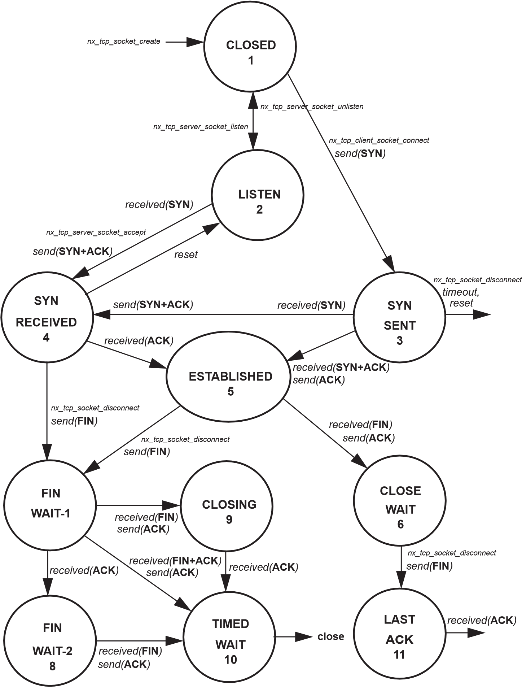
FIGURE 14. States of the TCP State Machine
| Applications should use nxd_tcp_client_socket_connect for either IPv4 and IPv6 TCP connections. Applications can still use nx_tcp_client_socket_connect for IPv4 TCP connections, but developers are encouraged to use nxd_tcp_client_socket_connect since nx_tcp_client_socket_connect will eventually be deprecated. |
Similarly, nxd_tcp_socket_peer_info_get works with either IPv4 or IPv6 TCP connections. However, nx_tcp_socket_peer_info_get is still available for legacy applications. Developers are encouraged to use nxd_tcp_socket_peer_info_get going forward.
TCP Client Disconnection
Closing the connection is accomplished by calling nx_tcp_socket_disconnect. If no suspension is specified, the client socket sends a RST packet to the server socket and places the socket in the CLOSED state. Otherwise, if a suspension is requested, the full TCP disconnect protocol is performed, as follows:
-
If the server previously initiated a disconnect request (the client socket has already received a FIN packet, responded with an ACK, and is in the CLOSE WAIT state), NetX Duo promotes the client TCP socket state to the LAST ACK state and sends a FIN packet. It then waits for an ACK from the server before completing the disconnect and entering the CLOSED state.
-
If on the other hand, the client is the first to initiate a disconnect request (the server has not disconnected and the socket is still in the ESTABLISHED state), NetX Duo sends a FIN packet to initiate the disconnect and waits to receive a FIN and an ACK from the server before completing the disconnect and placing the socket in a CLOSED state.
If there are still packets on the socket transmit queue, NetX Duo suspends for the specified timeout to allow the packets to be acknowledged. If the timeout expires, NetX Duo empties the transmit queue of the client socket.
To unbind the port from the client socket, the application calls nx_tcp_client_socket_unbind. The socket must be in a CLOSED state or in the process of disconnecting (i.e., TIMED WAIT state) before the port is released; otherwise, an error is returned.
Finally, if the application no longer needs the client socket, it calls nx_tcp_socket_delete to delete the socket.
TCP Server Connection
The server side of a TCP connection is passive; i.e., the server waits for a client to initiate connection request. To accept a client connection, TCP must first be enabled on the IP instance by calling the service nx_tcp_enable. Next, the application must create a TCP socket using the nx_tcp_socket_create service.
The server socket must also be set up for listening for connection requests. This is achieved by using the nx_tcp_server_socket_listen service. This service places the server socket in the LISTEN state and binds the specified server port to the socket.
| To set a socket listen callback routine the application specifies the appropriate callback function for the tcp_listen_callback argument of the nx_tcp_server_socket_listen service. This application callback function is then executed by NetX Duo whenever a new connection is requested on this server port. The processing in the callback is under application control. |
To accept client connection requests, the application calls the nx_tcp_server_socket_accept service. The server socket must either be in a LISTEN state or a SYN RECEIVED state (i.e., the server is in the LISTEN state and has received a SYN packet from a client requesting a connection) to call the accept service. A successful return status from nx_tcp_server_socket_accept indicates the connection has been set up and the server socket is in the ESTABLISHED state.
After the server socket has a valid connection, additional client connection requests are queued up to the depth specified by the listen_queue_size, passed into the nx_tcp_server_socket_listen service. In order to process subsequent connections on a server port, the application must call nx_tcp_server_socket_relisten with an available socket (i.e., a socket in a CLOSED state). Note that the same server socket could be used if the previous connection associated with the socket is now finished and the socket is in the CLOSED state.
TCP Server Disconnection
Closing the connection is accomplished by calling nx_tcp_socket_disconnect. If no suspension is specified, the server socket sends a RST packet to the client socket and places the socket in the CLOSED state. Otherwise, if a suspension is requested, the full TCP disconnect protocol is performed, as follows:
-
If the client previously initiated a disconnect request (the server socket has already received a FIN packet, responded with an ACK, and is in the CLOSE WAIT state), NetX Duo promotes the TCP socket state to the LAST ACK state and sends a FIN packet. It then waits for an ACK from the client before completing the disconnect and entering the CLOSED state.
-
If on the other hand, the server is the first to initiate a disconnect request (the client has not disconnected and the socket is still in the ESTABLISHED state), NetX Duo sends a FIN packet to initiate the disconnect and waits to receive a FIN and an ACK from the client before completing the disconnect and placing the socket in a CLOSED state.
If there are still packets on the socket transmit queue, NetX Duo suspends for the specified timeout to allow those packets to be acknowledged. If the timeout expires, NetX Duo flushes the transmit queue of the server socket.
After the disconnect processing is complete and the server socket is in the CLOSED state, the application must call the nx_tcp_server_socket_unaccept service to end the association of this socket with the server port. Note this service must be called by the application even if nx_tcp_socket_disconnect or nx_tcp_server_socket_accept return an error status. After the nx_tcp_server_socket_unaccept returns, the socket can be used as a client or server socket, or even deleted if it is no longer needed. If accepting another client connection on the same server port is desired, the nx_tcp_server_socket_relisten service should be called on this socket.
The following code segment illustrates the sequence of calls a typical TCP server uses:
/* Set up a previously created TCP socket to
listen on port 12 */
nx_tcp_server_socket_listen()
/* Loop to make a (another) connection. */
while(1)
{
/* Wait for a client socket connection request
for 100 ticks. */
nx_tcp_server_socket_accept();
/* (Send and receive TCP messages with the TCP
client) */
/* Disconnect the server socket. */
nx_tcp_socket_disconnect();
/* Remove this server socket from listening on
the port. */
nx_tcp_server_socket_unaccept(&server_socket);
/* Set up server socket to relisten on the
same port for the next client. */
nx_tcp_server_socket_relisten();
}MSS Validation
The Maximum Segment Size (MSS) is the maximum amount of bytes a TCP host can receive without being fragmented by the underlying IP layer. During TCP connection establishment phase, both ends exchanges its own TCP MSS value, so that the sender does not send a TCP data segment that is larger than the receiver’s MSS. NetX Duo TCP module will optionally validate its peer’s advertised MSS value before establishing a connection. By default NetX Duo does not enable such a check. Applications wishing to perform MSS validation shall define NX_ENABLE_TCP_MSS_CHECK when building the NetX Duo library, and the minimum value shall be defined in NX_TCP_MSS_MINIMUM. Incoming TCP connections with MSS values below NX_TCP_MSS_MINIMUM are dropped.
Stop Listening on a Server Port
If the application no longer wishes to listen for client connection requests on a server port that was previously specified by a call to the nx_tcp_server_socket_listen service, the application simply calls the nx_tcp_server_socket_unlisten service. This service places any socket waiting for a connection back in the CLOSED state and releases any queued client connection request packets.
TCP Window Size
During both the setup and data transfer phases of the connection, each port reports the amount of data it can handle, which is called its window size. As data are received and processed, this window size is adjusted dynamically. In TCP, a sender can only send an amount of data that fits into the receiver’s window. In essence, the window size provides flow control for data transfer in each direction of the connection.
TCP Packet Send
Sending TCP data is easily accomplished by calling the nx_tcp_socket_send function. If the size of the data being transmitted is larger than the MSS value of the socket or the current peer receive window size, whichever is smaller, TCP internal logic carves off the data that fits into min (MSS, peer receive Window) for transmission. This service then builds a TCP header in front of the packet (including the checksum calculation). If the receiver’s window size is not zero, the caller will send as much data as it can to fill up the receiver window size. If the receive window becomes zero, the caller may suspend and wait for the receiver’s window size to increase enough for this packet to be sent. At any given time, multiple threads may suspend while trying to send data through the same socket.
| The TCP data residing in the NX_PACKET structure should reside on a long-word boundary. In addition, there needs to be sufficient space between the prepend pointer and the data start pointer to place the TCP, IP, and physical media headers. |
TCP Packet Retransmit
Previously transmitted TCP packets sent actually stored internally until an ACK is returned from the other side of the connection. If transmitted data is not acknowledged within the timeout period, the stored packet is re-sent and the next timeout period is set. When an ACK is received, all packets covered by the acknowledgement number in the internal transmit queue are finally released.
| Application shall not reuse the packet or alter the contents of the packet after nx_tcp_socket_send() returns with NX_SUCCESS. The transmitted packet is eventually released by NetX Duo internal processing after the data is acknowledged by the other end. |
TCP Keepalive
TCP Keepalive feature allows a socket to detect whether or not its peer disconnects without proper termination (for example, the peer crashed), or to prevent certain network monitoring facilities to terminate a connection for long periods of idle. TCP Keepalive works by periodically sending a TCP frame with no data, and the sequence number set to one less than the current sequence number. On receiving such TCP Keepalive frame, the recipient, if still alive, responses with an ACK for its current sequence number. This completes the keepalive transaction.
By default the keepalive feature is not enabled. To use this feature, NetX Duo library must be built with NX_ENABLE_TCP_KEEPALIVE defined. The symbol NX_TCP_KEEPALIVE_INITIAL specifies the number of seconds of inactivity before the keepalive frame is initiated.
TCP Packet Receive
The TCP receive packet processing (called from the IP helper thread) is responsible for handling various connection and disconnection actions as well as transmit acknowledge processing. In addition, the TCP receive packet processing is responsible for placing packets with receive data on the appropriate TCP socket’s receive queue or delivering the packet to the first suspended thread waiting for a packet.
TCP Receive Notify
If the application thread needs to process received data from more than one socket, the nx_tcp_socket_receive_notify function should be used. This function registers a receive packet callback function for the socket. Whenever a packet is received on the socket, the callback function is executed.
The contents of the callback function are application specific; however, the function would most likely contain logic to inform the processing thread that a packet is available on the corresponding socket.
Thread Suspension
As mentioned previously, application threads can suspend while attempting to receive data from a particular TCP port. After a packet is received on that port, it is given to the first thread suspended and that thread is then resumed. An optional timeout is available when suspending on a TCP receive packet, a feature available for most NetX Duo services.
Thread suspension is also available for connection (both client and server), client binding, and disconnection services.
TCP Socket Statistics and Errors
If enabled, the NetX Duo TCP socket software keeps track of several statistics and errors that may be useful to the application. The following statistics and error reports are maintained for each IP/TCP instance:
-
Total TCP Packets Sent
-
Total TCP Bytes Sent
-
Total TCP Packets Received
-
Total TCP Bytes Received
-
Total TCP Invalid Packets
-
Total TCP Receive Packets Dropped
-
Total TCP Receive Checksum Errors
-
Total TCP Connections
-
Total TCP Disconnections
-
Total TCP Connections Dropped
-
Total TCP Packet Retransmits
-
TCP Socket Packets Sent
-
TCP Socket Bytes Sent
-
TCP Socket Packets Received
-
TCP Socket Bytes Received
-
TCP Socket Packet Retransmits
-
TCP Socket Packets Queued
-
TCP Socket Checksum Errors
-
TCP Socket State
-
TCP Socket Transmit Queue Depth
-
TCP Socket Transmit Window Size
-
TCP Socket Receive Window Size
All these statistics and error reports are available to the application with the nx_tcp_info_get service for total TCP statistics and the nx_tcp_socket_info_get service for TCP statistics per socket.
TCP Socket Control Block NX_TCP_SOCKET
The characteristics of each TCP socket are found in the associated NX_TCP_SOCKET control block, which contains useful information such as the link to the IP data structure, the network connection interface, the bound port, and the receive packet queue. This structure is defined in the nx_api.h file.
TCP/IP Offload
This feature enables NetX Duo to support network interface card that offers TCP/IP service on the hardware. Certain WiFi modules offer TCP/IP processing on the module, and the applications on MCU send and receive packets through APIs to access its TCP/IP stack. With this feature enabled, developers can run native NetX Duo applications directly.
To enable TCP/IP offload feature, NetX Duo must be built with NX_ENABLE_TCPIP_OFFLOAD and NX_ENABLE_INTERFACE_CAPABILITY defined.
TCP/IP Offload Handler
NetX Duo communicates with network driver through a callback function to handle TCP or UDP socket operations. The callback function is defined in the NX_INTERFACE_STRUCT. Network driver needs to set the TCP/IP callback function during NX_LINK_ENABLE driver command. The prototype of TCP/IP callback function is as below.
UINT (*nx_interface_tcpip_offload_handler)(struct NX_IP_STRUCT *ip_ptr,
struct NX_INTERFACE_STRUCT *interface_ptr,
VOID *socket_ptr, UINT operation, NX_PACKET *packet_ptr,
NXD_ADDRESS *local_ip, NXD_ADDRESS *remote_ip,
UINT local_port, UINT *remote_port, UINT wait_option);Description of parameters.
-
ip_ptr- Pointer to IP instance -
interface_ptr- Pointer to interface -
socket_ptr- Pointer toNX_TCP_SOCKETorNX_UDP_SOCKET, depends on the value ofoperation -
operation- Operation of current function call. Values are defined as below#define NX_TCPIP_OFFLOAD_TCP_CLIENT_SOCKET_CONNECT 0 #define NX_TCPIP_OFFLOAD_TCP_SERVER_SOCKET_LISTEN 1 #define NX_TCPIP_OFFLOAD_TCP_SERVER_SOCKET_ACCEPT 2 #define NX_TCPIP_OFFLOAD_TCP_SERVER_SOCKET_UNLISTEN 3 #define NX_TCPIP_OFFLOAD_TCP_SOCKET_DISCONNECT 4 #define NX_TCPIP_OFFLOAD_TCP_SOCKET_SEND 5 #define NX_TCPIP_OFFLOAD_UDP_SOCKET_BIND 6 #define NX_TCPIP_OFFLOAD_UDP_SOCKET_UNBIND 7 #define NX_TCPIP_OFFLOAD_UDP_SOCKET_SEND 8 -
packet_ptr- Pointer to packet. The value is set whenoperationisTCP_SOCKET_SENDorUDP_SOCKET_SEND -
local_ip- Pointer to local IP address. The value is set whenoperationisUDP_SOCKET_SEND -
remote_ip- Pointer to remote IP address. The value is set whenoperationisTCP_CLIENT_SOCKET_CONNECTorUDP_SOCKET_SEND. When the operation isTCP_SERVER_SOCKET_ACCEPT, this value must be returned by callback function -
local_port- Local port. The value is set whenoperationisTCP_CLIENT_SOCKET_CONNECT,TCP_SERVER_SOCKET_LISTEN,TCP_SERVER_SOCKET_ACCEPT,TCP_SERVER_SOCKET_UNLISTENor UDP -
remote_port- Remote port. The value is set whenoperationisTCP_CLIENT_SOCKET_CONNECTorUDP_SOCKET_SEND. When the operation isTCP_SERVER_SOCKET_ACCEPT, this value must be returned by callback function -
wait_option- Wait option in ticks. The value is set for all operations
TCP/IP Offload Context
A pointer is added to NX_TCP_SOCKET structure to be used by TCP/IP offload driver.
typedef struct NX_TCP_SOCKET_STRUCT
{
// ...
/* This pointer is designed to be accessed by TCP/IP offload directly. */
VOID *nx_tcp_socket_tcpip_offload_context;
} NX_TCP_SOCKET;
A pointer is added to NX_UDP_SOCKET structure to be used by TCP/IP offload driver.
typedef struct NX_UDP_SOCKET_STRUCT
{
// ...
/* This pointer is designed to be accessed by TCP/IP offload directly. */
VOID *nx_udp_socket_tcpip_offload_context;
} NX_UDP_SOCKET;
APIs for TCP/IP Offload Network Driver
/* Invoked when TCP packet is receive or connection error. */
VOID _nx_tcp_socket_driver_packet_receive(NX_TCP_SOCKET *socket_ptr, NX_PACKET *packet_ptr);
/* Invoked when TCP connection is establish. */
UINT _nx_tcp_socket_driver_establish(NX_TCP_SOCKET *socket_ptr, NX_INTERFACE *interface_ptr, UINT remote_port);
/* Invoked when UDP packet is receive. */
VOID _nx_udp_socket_driver_packet_receive(NX_UDP_SOCKET *socket_ptr, NX_PACKET *packet_ptr,
NXD_ADDRESS *local_ip, NXD_ADDRESS *remote_ip, UINT remote_port);TCP/IP Offload Driver
A driver function is needed for each IP interface. Refer to Chapter 5 for more details on how to develop NetX Duo driver functions.
TSN Components
Time-Sensitive Networking (TSN) is a suite of standards crafted by the IEEE 802.1 working group aimed at augmenting the capabilities of Ethernet networks. These standards define mechanisms for transmitting time-sensitive data over deterministic Ethernet networks.
In this section, the TSN compents in below frame work in colour blue are described.
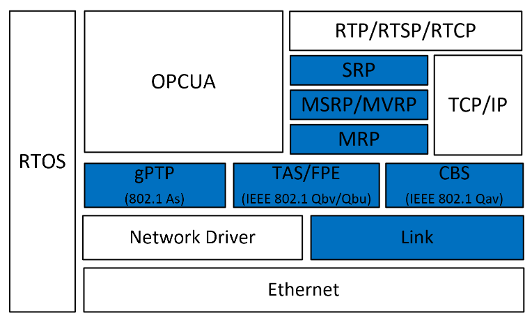
FIGURE 15. TSN Framework
Link layer
In NetxDuo, the Link Layer component offers a range of essential functionalities, These include:
VLAN Interface Creation: NetxDuo allows for the seamless creation of Virtual Local Area Network (VLAN) interfaces, enabling the segmentation of network traffic into distinct logical networks.
VLAN ID Modification: It provides the capability to modify VLAN IDs on specific VLAN interface, facilitating the customization and management of VLAN configurations to suit specific network requirements.
Raw Packet Transmission: NetxDuo provides a Raw Packet transmission interface for direct transmission of network packets at the Link Layer. This is particularly useful for specialized network communication needs, such as the direct sending of packets by MRP and ptp components using raw packet transmission.
Packet Distribution for Received Packets: The Link Layer in NetxDuo efficiently handles the reception of network packets, distributing them appropriately based on packet types. This includes the distribution of VLAN-tagged packets to the corresponding VLAN interfaces and the distribution of untagged packets to the default interface.
Above functionalities are used by TSN components to implement TSN features.
Credit-based shaper (CBS) - IEEE 802.1Qav Forwarding and Queuing Enhancements for Time-Sensitive Stream
Credit-based shaper (CBS) is a traffic shaping mechanism that is in audio video bridge(AVB) network, to ensure/control the bandwidth of specific audio and video traffic streams. this mechanism can ensure that the data is transmitted at a constant rate and to avoid congestion in the network.
In CBS module of NetxDuo, following functionalities are provided:
-
CBS shaper creation and deletion.
-
The Mapping configuration of PCP on VLAN tag to related hardware queue.
-
CBS parameters Setting, such as idle slope, send slope, and CBS credit limit.
By utilizing these functionalities, we can assign different SR class traffic to specific hardware queues and control the bandwidth of the traffic by setting the CBS parameters on related hardware queues.
Time-Aware Shaper (TAS) - IEEE 802.1Qbv Enhancements to Traffic Scheduling
TAS (Time-Aware Scheduler) in TSN (Time-Sensitive Networking) is designed to ensures deterministic and prioritized communication by controlling the bandwidth allocation for high-priority streams through gate control and regulating cycles.
The IEEE 802.1Qbv time-aware scheduler orchestrates Ethernet network communication by dividing it into fixed-length, repeating time cycles. Within these cycles, customizable time slices are allocated to one or multiple of the eight Ethernet priorities. This approach enables exclusive utilization of the Ethernet transmission medium for time-sensitive traffic classes, ensuring uninterrupted transmission guarantees when needed. Operating on a time-division multiple access (TDMA) scheme, the scheduler establishes virtual communication channels for specific time periods, effectively segregating time-critical communication from non-critical background traffic.
In TAS module of NetxDuo, following functionalities are provided:
-
TAS shaper creation and deletion. (Shared with CBS and FPE)
-
The Mapping configuration of PCP on VLAN tag to related hardware queue.(Shared with CBS)
-
TAS parameters setting. Include base time, cycle time, time slot and associated gate control settings.
By leveraging these functionalities, high-priority traffic can be directed to specific hardware queues with allocated time slots, enabling precise bandwidth control. Furthermore, through synchronized TAS settings across the entire TSN infrastructure and time synchronization facilitated by gPTP (generalized Precision Time Protocol), we can effectively manage end-to-end latency for traffic, ensuring timely and reliable communication.
Frame preemption (FPE) - 802.1Qbu
Frame Preemption (FPE) is a TSN feature that allows high-priority frames to interrupt the transmission of lower-priority frames. This feature is particularly useful in time-sensitive applications, where the timely delivery of high-priority frames is critical. By preempting the transmission of lower-priority frames, high-priority frames can be transmitted without delay, ensuring that they are delivered within the required time frame.
In FPE module of NetxDuo, following functionalities are provided:
-
FPE shaper creation and deletion. (Shared with CBS and TAS)
-
FPE parameters setting. such as enable/disable the FPE verification, express queue bitmap setting, ha/ra time setting, express queue guard band enable/disable.
FPE (Frame Preemption Engine) is typically utilized in conjunction with TAS (Time-Aware Scheduler). By fragmenting preemptable frames, the guard band required for preemptable frame slots is reduced, thus increasing bandwidth utilization efficiency.
Time synchronization(gPTP)
The gPTP (Generalized Precision Time Protocol), as described in the IEEE 1588 Precision Time Protocol standard, is utilized within Time-Sensitive Networks (TSN) to synchronize time across network devices.
In gPTP module of NetxDuo, following functionalities are provided:
-
Creation and deletion of PTP client.
-
Starting and stopping the PTP client.
-
Retrieving and setting the PTP clock in the client.
-
Acquiring master clock information and sync message details through the PTP client.
-
Transmission of timestamp notifications for PTP packets.
-
Implementation of a software-based PTP clock.
-
Utility of computing the difference between two PTP times.
-
Utility of converting a PTP time to a UTC date and time.
Stream Registration Protocol (SRP)
SRP (Stream Reservation Protocol) is a protocol used in Time-Sensitive Networking (TSN). It allows devices to reserve resources for specific streams of data across the network. This ensures that these streams have the necessary bandwidth and can meet their time sensitivity requirements.
In SRP module of NetxDuo, following functionalities are provided:
-
Initialization of SRP service.
-
Starting and stopping the SRP talker service.
-
Starting and stopping the SRP listener service.
Multiple Stream Reservation Protocol (MSRP)
MSRP (Multiple Stream Reservation Protocol) in Time-Sensitive Networking (TSN) is an extension of the Stream Reservation Protocol (SRP). By allowing multiple stream reservations, MSRP enhances the deterministic data delivery capabilities of TSN, ensuring that data can be delivered with a guaranteed level of performance across multiple streams.
In MSRP module of NetxDuo, following functionalities are provided:
-
Initialization of an MSRP instance.
-
Parsing and packing of MRP Data Units (MRPDUs).
-
Management of the registration and deregistration processes for a stream.
-
Management of the registration and deregistration processes for an attachment to a stream.
-
Handling of indications for a stream’s registration and deregistration events.
-
Handling of indications for an attachment’s registration and deregistration events.
-
Management of the registration and deregistration processes for a domain, as well as handling the indications of these events.
Multiple vlan registration protocol (MVRP)
The Multiple VLAN Registration Protocol (MVRP) is a protocol that provides dynamic VLAN registration service. It is an MRP (Multiple Registration Protocol) application that makes use of MRP Attribute Declaration (MAD) and MRP Attribute Propagation (MAP) to provide common state machine descriptions and attribute propagation mechanisms. MVRP provides a mechanism for dynamic maintenance of the contents of Dynamic VLAN Registration Entries for each VLAN and propagates the information they contain to other Bridges. This information allows MVRP-aware devices to dynamically establish and update their knowledge of the set of VLANs that currently have active members, and through which Ports those members can be reached. In MVRP module of NetxDuo, following functionalities are provided to SRP/MRP components:
-
Initialization of an MVRP instance.
-
Parsing and packing of MRP Data Units (MRPDUs).
-
Process the join or leave a VLAN request command from SRP, and trigger the corresponding VLAN registration or deregistration process.
-
Handling of indications for a stream’s registration and deregistration events from MRP.
Multiple registration protocol (MRP)
The Multiple Registration Protocol (MRP) is a protocol that provides dynamic registration and deregistration of attributes in a network. It is used to manage resources in a network, such as VLANs, multicast addresses, and streams. MRP operates uses a common state machine and attribute propagation mechanisms to provide a consistent view of the network resources. MRP is used by other protocols, such as MVRP (Multiple VLAN Registration Protocol) and MSRP (Multiple Stream Registration Protocol), to provide dynamic registration of VLANs and streams, respectively.
In MRP module of NetxDuo, following functionalities are provided to MRP applications:
-
Provide the interface of MRP initialization.
-
Maintaining state machine for MRP applications.
-
Process the event triggered by receiving different MRP messages.
-
Receiving the message from ethernet, and distribute the MRP messages to the corresponding MRP applications.
-
Handle the timer event for MRP applications.